![]()
# Pre-log the outcome:
whatever <- whatever |>
mutate(y_logged = log(y))
lm(y_logged ~ x, data = whatever)
# Log the outcome in the regression itself:
lm(log(y) ~ x, data = whatever)In a research project I’ve been working on for several years now, we’re interested in the effect of anti-NGO legal crackdowns on various foreign aid-related outcomes: the amount of foreign aid a country receives and the proportion of that aid dedicated to contentious vs. non-contentious causes or issues. These outcome variables are easily measurable thanks to the AidData project, but they post a tricky methodological issue. The amount of foreign aid countries receive can both be huge (in the hundreds of millions or even billions of dollars), or completely zero. Moreover, the proportion of aid allocated to specific purposes is inherently bound between 0% and 100%, but can sometimes be exactly 0% or 100%. Using a statistical model that fits the distribution of these kinds of variables is important for modeling accuracy, but it’s a more complicated process than running a basic linear OLS regression with lm().
In a previous post, I wrote a guide to doing beta, zero-inflated beta, and zero-one-inflated beta regression for outcome variables that are bound between 0 and 1 and that can include 0 and/or 1. (That post was a side effect of working on this project on foreign aid and anti-NGO restrictions.)
Beta regression (and its zero- and zero-one-inflated varieties) works really well with these kinds of outcome variables, and you can end up with richly defined models and well-fitting models. Zero-inflated beta regression doesn’t work on outcomes that aren’t limited to 0–1, though. For outcome variables that extend beyond 1, we can use hurdle models instead, which follow the same general approach as zero-inflated models. We define a mixture of models for two separate processes:
- A model that predicts if the outcome is zero or not zero
- If the outcome is not zero, a model that predicts what the value of the outcome is
Hurdle models do a great job at fitting the data well and providing accurate predictions. They’re a little unwieldy to work with though, since they involve so many different moving parts.
This post is a guide (mostly for future me) for how to create, manipulate, understand, analyze, and plot hurlde models in a Bayesian way using R and Stan (through brms).
Throughout this post, we’ll use data from two datasets to explore a couple different questions:
- What happens to a country’s GDP per capita as its life expectancy increases? We’ll use data from the Gapminder Project (though the gapminder R package)
- What is the effect of bill length on body mass in Antarctic penguins? We’ll use data from the palmerpenguins R package.
Neither GDP per capita nor flipper length have any naturally ocurring zeros, so we’ll manipulate the data beforehand and build in some zeros based on some arbitrary rules. For the health/weatlh gapminder data, we’ll make it so countries with lower life expectancy will have a higher chance of seeing a 0 in GDP per capita; for the penguin data, we’ll make it so that shorter flipper length will increase the chance of seeing a 0 in body mass.
Who this post is for
Here’s what I assume you know:
- You’re familiar with R and the tidyverse (particularly dplyr and ggplot2).
- You’re familiar with brms for running Bayesian regression models. See the vignettes here, examples like this, or resources like these for an introduction. You can also see this guide on beta regression or this guide on average marginal effects for more examples.
- You’re somewhat familiar with multilevel models. See this guide on using multilevel models with panel data for an extended example and a ton of extra resources.
I use brms and Bayesian models throughout, since brms has built-in support for hurdled lognormal models (and can be extended to support other hurdled models). If you prefer frequentism, you can use pscl::hurdle() for frequentist hurdle models (see this post or this post for fully worked out examples), and lognormal regression can be done frequentistly with base R’s lm() function after logging the outcome:
Let’s get started by loading all the libraries we’ll need (and creating some couple helper functions):
library(tidyverse) # ggplot, dplyr, and friends
library(brms) # Bayesian modeling through Stan
library(emmeans) # Calculate marginal effects in fancy ways
library(tidybayes) # Manipulate Stan objects in a tidy way
library(broom) # Convert model objects to data frames
library(broom.mixed) # Convert brms model objects to data frames
library(scales) # For formatting numbers with commas, percents, and dollars
library(patchwork) # For combining plots
library(ggh4x) # For nested facets in ggplot
library(ggtext) # Use markdown and HTML in ggplot text
library(MetBrewer) # Use pretty artistic colors
library(gapminder) # Country-year panel data from the Gapminder project
library(palmerpenguins) # Penguin data!
# Use the cmdstanr backend for Stan because it's faster and more modern than the
# default rstan You need to install the cmdstanr package first
# (https://mc-stan.org/cmdstanr/) and then run cmdstanr::install_cmdstan() to
# install cmdstan on your computer.
options(mc.cores = 4,
brms.backend = "cmdstanr")
# Set some global Stan options
CHAINS <- 4
ITER <- 2000
WARMUP <- 1000
BAYES_SEED <- 1234
# Use the Johnson color palette
clrs <- MetBrewer::met.brewer("Johnson")
# Tell bayesplot to use the Johnson palette (for things like pp_check())
bayesplot::color_scheme_set(c("grey30", clrs[2], clrs[1], clrs[3], clrs[5], clrs[4]))
# Custom ggplot theme to make pretty plots
# Get the font at https://fonts.google.com/specimen/Jost
theme_nice <- function() {
theme_minimal(base_family = "Jost") +
theme(panel.grid.minor = element_blank(),
plot.title = element_text(family = "Jost", face = "bold"),
axis.title = element_text(family = "Jost Medium"),
strip.text = element_text(family = "Jost", face = "bold",
size = rel(1), hjust = 0),
strip.background = element_rect(fill = "grey80", color = NA))
}Exponentially distributed outcomes with zeros
Like Hans Rosling, we’re interested in the relationship between health and wealth. How do a country’s GDP per capita and life expectancy move together? We’ll look at this a few different ways, dealing with both the exponential shape of the data and the presence of all those zeros we added.
All these examples are the reverse of the standard way of looking at the health/wealth relationship—in Rosling’s TED talk, GDP is on the x-axis and life expectancy is on the y-axis, since his theory is that more wealth leads to better health and longer life. But since I want to illustrate how to model logged outcome, we’ll put GDP on the y-axis here, which means we’ll be seeing what happens to wealth as life expectancy changes by one year (i.e. instead of the more standard lifeExp ~ gdpPercap, we’ll look at gdpPercap ~ lifeExp).
The data from the Gapminder Project is nice and clean and complete—there are no missing values, and there are no zero values. That means we’ll need to mess with the data a little to force it to have some zeros that we can work with. We’ll change some of the existing GDP per capita values to 0 based on two conditions:
- If life expectancy is less than 50 years, there will be a 30% chance that the value of GDP per capita is 0
- If life expectancy is greater than 50 years, there will be a 2% chance that the value of GDP per capita is 0
This means that countries with lower life expectancy will be more likely to have 0 GDP per capita in a given year.
set.seed(1234)
gapminder <- gapminder::gapminder |>
filter(continent != "Oceania") |>
# Make a bunch of GDP values 0
mutate(prob_zero = ifelse(lifeExp < 50, 0.3, 0.02),
will_be_zero = rbinom(n(), 1, prob = prob_zero),
gdpPercap = ifelse(will_be_zero, 0, gdpPercap)) |>
select(-prob_zero, -will_be_zero) |>
# Make a logged version of GDP per capita
mutate(log_gdpPercap = log1p(gdpPercap)) |>
mutate(is_zero = gdpPercap == 0)Explore data
Let’s check if it worked:
gapminder |>
count(is_zero) |>
mutate(prop = n / sum(n))
## # A tibble: 2 × 3
## is_zero n prop
## <lgl> <int> <dbl>
## 1 FALSE 1502 0.894
## 2 TRUE 178 0.106Perfect! We broke the pristine data and now 10.6% of the values of GDP per capita are zero.
We can visualize this too (and we’ll cheat a little for the sake of plotting by temporarily changing all zeros to a negative number so we can get a separate count in the histogram).
plot_dist_unlogged <- gapminder |>
mutate(gdpPercap = ifelse(is_zero, -0.1, gdpPercap)) |>
ggplot(aes(x = gdpPercap)) +
geom_histogram(aes(fill = is_zero), binwidth = 5000,
boundary = 0, color = "white") +
geom_vline(xintercept = 0) +
scale_x_continuous(labels = label_dollar(scale_cut = cut_short_scale())) +
scale_fill_manual(values = c(clrs[4], clrs[1]),
guide = guide_legend(reverse = TRUE)) +
labs(x = "GDP per capita", y = "Count", fill = "Is zero?",
subtitle = "Nice and exponentially shaped, with a bunch of zeros") +
theme_nice() +
theme(legend.position = "bottom")
plot_dist_logged <- gapminder |>
mutate(log_gdpPercap = ifelse(is_zero, -0.1, log_gdpPercap)) |>
ggplot(aes(x = log_gdpPercap)) +
geom_histogram(aes(fill = is_zero), binwidth = 0.5,
boundary = 0, color = "white") +
geom_vline(xintercept = 0) +
scale_x_continuous(labels = label_math(e^.x)) +
scale_fill_manual(values = c(clrs[4], clrs[1]),
guide = guide_legend(reverse = TRUE)) +
labs(x = "GDP per capita", y = "Count", fill = "Is zero?",
subtitle = "Nice and normally shaped, with a bunch of zeros;\nit's hard to interpret intuitively though") +
theme_nice() +
theme(legend.position = "bottom")
(plot_dist_unlogged | plot_dist_logged) +
plot_layout(guides = "collect") +
plot_annotation(title = "GDP per capita, original vs. logged",
theme = theme(plot.title = element_text(family = "Jost", face = "bold"),
legend.position = "bottom"))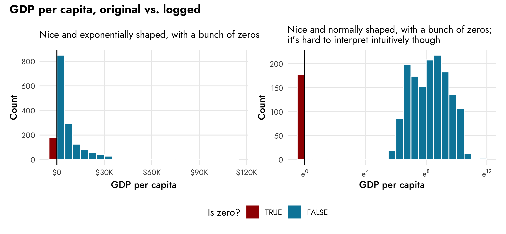
The left panel here shows the exponential distribution of GDP per capita. There are a lot of countries with low values (less than $500!), and increasingly fewer countries with more per capita wealth. The right panel shows the natural log (i.e. log base e) of GDP per capita. It’s now a lot more normally distributed (if we disregard the column showing the count of zeros), but note the x-axis scale—instead of using easily interpretable dollars, it shows the exponent that e is raised to, which is really unintuitive. Logged values are helpful when working with regression models, and this CrossValidated post reviews how to interpret model coefficients when different variables are logged or not. In this case, if we use logged GDP per capita as the outcome variable, any explanatory coefficients we have will represent the percent change in GDP per capita—a one-year increase in life expectancy will be associated with a X% change in GDP per capita, on average.
Ideally, it’d be great if we could work with dollar-scale coefficients and marginal effects rather than percent change-based coefficients (since I find dollars more intuitive than percent changes), but because of mathy and statsy reasons, it’s best to model this outcome using a log scale. With some neat tricks, though, we can back-transform the log-scale results to dollars.
1. Regular OLS model on an unlogged outcome
Now that we’ve built in some zeros, let’s model the relationship between health and wealth.
First, we’ll use a basic linear regression model with all the data at its original scale—no logging, no accounting for zeros, just drawing a straight line through data using ordinal least squares (OLS). Let’s look at a scatterplot first:
ggplot(gapminder, aes(x = lifeExp, y = gdpPercap)) +
geom_point(aes(color = continent), size = 1, alpha = 0.5) +
geom_smooth(method = "lm", color = "#0074D9") +
scale_y_continuous(labels = label_dollar(scale_cut = cut_short_scale())) +
scale_color_manual(values = clrs) +
labs(x = "Life expectancy", y = "GDP per capita", color = NULL,
title = "OLS model fit on unlogged GDP") +
guides(color = guide_legend(override.aes = list(size = 1.5, alpha = 1))) +
theme_nice() +
theme(legend.position = "bottom")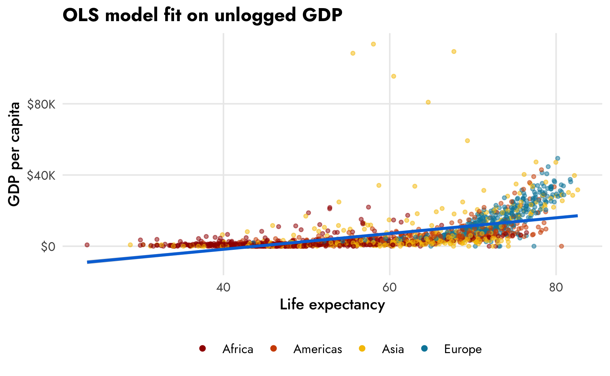
Hahaha that line is, um, great. Because of the exponential distribution of GDP per capita, the scatterplot follows a sort of hockey stick shape: the points are almost horizontal at low levels of life expectancy and they start trending at more of a 45º angle at at around 65 years The corresponding OLS trend line cuts across empty space in a ridiculous way and predicts negative income at low life expectancy and quite muted income at high life expectancy
Even so, many social science disciplines love OLS and use it for literally everything, so we’ll use it here too. Let’s make a basic OLS model:
model_gdp_basic <- brm(
bf(gdpPercap ~ lifeExp),
data = gapminder,
family = gaussian(),
chains = CHAINS, iter = ITER, warmup = WARMUP, seed = BAYES_SEED,
silent = 2
)tidy(model_gdp_basic)
## # A tibble: 3 × 8
## effect component group term estimate std.error conf.low conf.high
## <chr> <chr> <chr> <chr> <dbl> <dbl> <dbl> <dbl>
## 1 fixed cond <NA> (Intercept) -19434. 943. -21216. -17608.
## 2 fixed cond <NA> lifeExp 442. 15.6 412. 472.
## 3 ran_pars cond Residual sd__Observation 8054. 140. 7789. 8337.Based on this model, when life expectancy is 0, the average GDP per capita is -$19,433.69, though since no countries have life expectancy that low, we shouldn’t really interpret that intercept—it mostly just exists so that the line can start somewhere. We care the most about the lifeExp coefficient: a one-year increase in life expectancy is associated with a $442.49 increase in GDP per capita, on average.
We can already tell that the fitted OLS trend isn’t that great. Let’s do a posterior predictive check to see how well the actual observed GDP per capita (in ■ light blue) aligns with simulated GDP per capita from the posterior distribution of the model (in ■ orange):
pp_check(model_gdp_basic)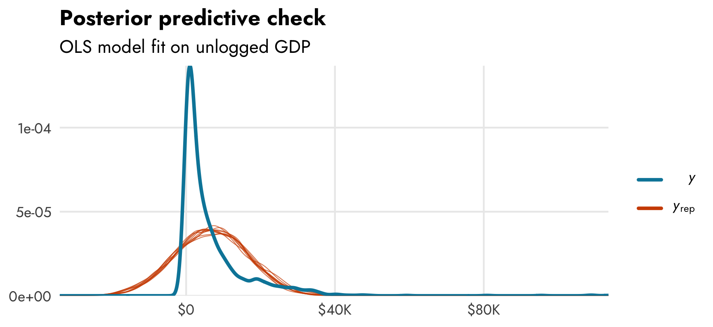
Again, not fantastic. The actual distribution of GDP per capita is (1) exponential, so it has lots of low values, and (2) zero-inflated, so it has a lot of zeros. The posterior from the model shows a nice normal distribution of GDP per capita centered around $15,000ish. It’s not a great model at all.
2. Regular OLS model on a logged outcome
A standard approach when working with exponentially distributed outcomes like this is to log them. If we look at this scatterplot with base-10-logged GDP per capita, the shape of the data is much more linear and modelable. I put the 0s in a separate facet so that they’re easier to see too. We can easily see the two different processes—there’s a positive relationship between life expectancy and logged GDP per capita (shown with the ■ blue line), and there are a bunch of observations with 0 GDP per capita, generally clustered among rows with life expectancy less than 50 (which is by design, since we made it so all those rows had a 20% chance of getting a 0).
plot_health_wealth_facet <- gapminder |>
mutate(nice_zero = factor(is_zero, levels = c(FALSE, TRUE),
labels = c("GDP > $0", "0"),
ordered = TRUE)) |>
ggplot(aes(x = lifeExp, y = gdpPercap + 1)) +
geom_point(aes(color = continent), size = 1, alpha = 0.5) +
geom_smooth(aes(linetype = is_zero), method = "lm", se = FALSE, color = "#0074D9") +
scale_y_log10(labels = label_dollar(scale_cut = cut_short_scale()),
breaks = 125 * (2^(1:10))) +
scale_color_manual(values = clrs) +
scale_linetype_manual(values = c("solid", "blank"), guide = NULL) +
labs(x = "Life expectancy", y = "GDP per capita (base 10 logged)", color = NULL,
title = "OLS model fit only for rows where GDP > 0",
subtitle = "GDP per capita logged with base 10") +
guides(color = guide_legend(override.aes = list(size = 1.5, alpha = 1))) +
coord_cartesian(xlim = c(30, 80)) +
facet_grid(rows = vars(nice_zero), scales = "free_y", space = "free") +
theme_nice() +
theme(legend.position = "bottom",
strip.text = element_text(size = rel(0.7)))
plot_health_wealth_facet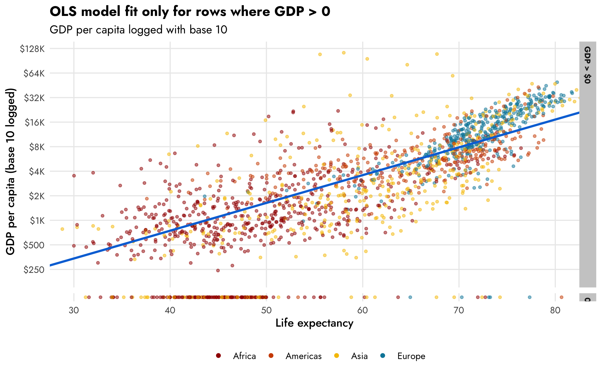
The same relationship holds when we use the natural log of GDP per capita, where values range from 6–12ish, as we saw in the histogram earlier. For statistical reasons, using the natural log works better and makes the interpretation of the coefficients easier since we can talk about percent changes in the outcome. Again, this CrossValidated post is indispensable for remembering how to interpret coefficients that are or aren’t logged when outcomes are or aren’t logged.
plot_health_wealth_facet +
# Switch the column on the y-axis to logged GDP per capita
aes(y = log_gdpPercap) +
scale_y_continuous(labels = label_math(e^.x), breaks = 5:12) +
labs(y = "GDP per capital (logged)",
subtitle = "GDP per capita logged with base e")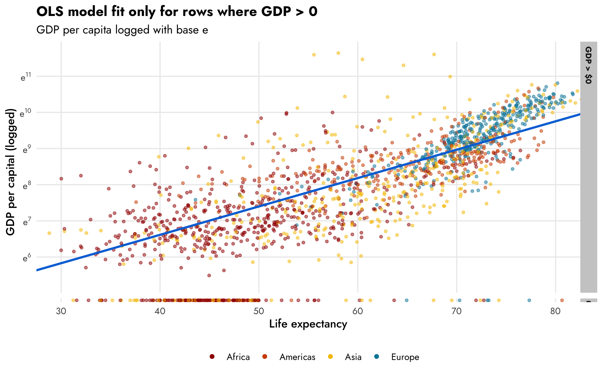
However, those zeros are going to cause problems. The nice ■ blue line is only fit using the non-zero data. If we include the zeros, like the ■ fuchsia line in this plot, the relationship is substantially different:
ggplot(gapminder, aes(x = lifeExp, y = log_gdpPercap)) +
geom_point(aes(color = continent), size = 1, alpha = 0.5) +
geom_smooth(method = "lm", color = "#F012BE") +
geom_smooth(data = filter(gapminder, gdpPercap != 0), method = "lm", color = "#0074D9") +
scale_y_continuous(labels = label_math(e^.x)) +
scale_color_manual(values = clrs) +
labs(x = "Life expectancy", y = "GDP per capita (log)", color = NULL) +
guides(color = guide_legend(override.aes = list(size = 1.5, alpha = 1))) +
coord_cartesian(xlim = c(30, 80)) +
labs(title = 'OLS models <span style="color:#F012BE;">with</span> and <span style="color:#0074D9;">without</span> zeros') +
theme_nice() +
theme(legend.position = "bottom",
plot.title = element_markdown())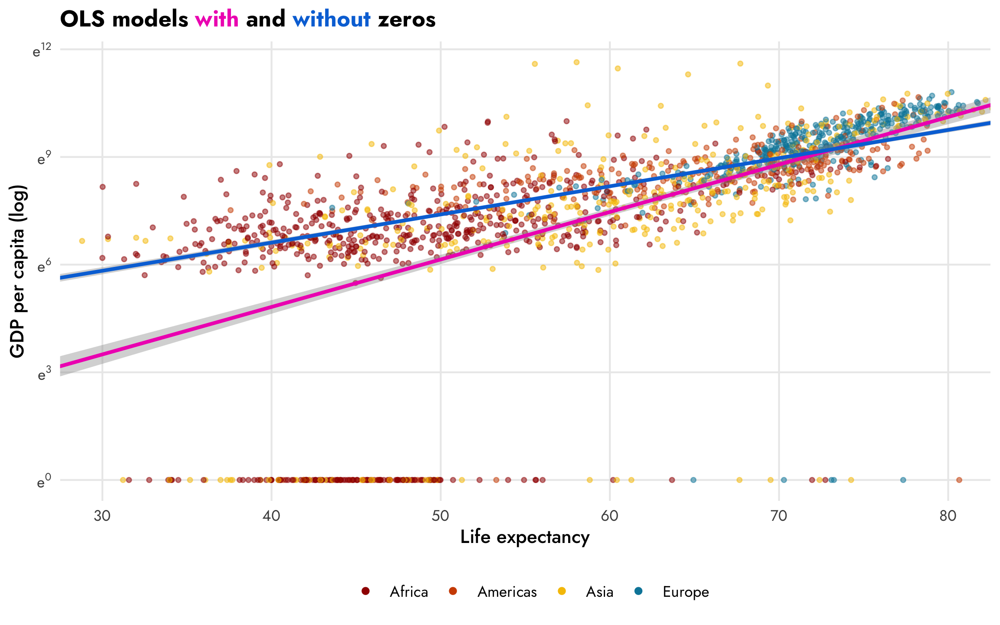
Let’s make a couple models that use logged GDP with and without zeros and compare the life expectancy coefficients:
model_log_gdp_basic <- brm(
bf(log_gdpPercap ~ lifeExp),
data = gapminder,
family = gaussian(),
chains = CHAINS, iter = ITER, warmup = WARMUP, seed = BAYES_SEED,
silent = 2
)
model_log_gdp_no_zeros <- brm(
bf(log_gdpPercap ~ lifeExp),
data = filter(gapminder, !is_zero),
family = gaussian(),
chains = CHAINS, iter = ITER, warmup = WARMUP, seed = BAYES_SEED,
silent = 2
)tidy(model_log_gdp_basic)
## # A tibble: 3 × 8
## effect component group term estimate std.error conf.low conf.high
## <chr> <chr> <chr> <chr> <dbl> <dbl> <dbl> <dbl>
## 1 fixed cond <NA> (Intercept) -0.468 0.256 -0.973 0.0252
## 2 fixed cond <NA> lifeExp 0.132 0.00420 0.124 0.141
## 3 ran_pars cond Residual sd__Observation 2.21 0.0379 2.14 2.29
tidy(model_log_gdp_no_zeros)
## # A tibble: 3 × 8
## effect component group term estimate std.error conf.low conf.high
## <chr> <chr> <chr> <chr> <dbl> <dbl> <dbl> <dbl>
## 1 fixed cond <NA> (Intercept) 3.48 0.0943 3.29 3.66
## 2 fixed cond <NA> lifeExp 0.0784 0.00152 0.0754 0.0814
## 3 ran_pars cond Residual sd__Observation 0.735 0.0133 0.708 0.761In the model that includes the zeros (the ■ fuchsia line), a one-year increase in life expectancy is associated with a 13.2% increase in GDP per capita, on average, but if we omit the zeros (the ■ blue line), the slope changes substantially—here, a one-year increase in life expectancy is associated with a 7.8% increase in GDP per capita. The zero-free model fits the data better, but omits the zeros; the model with the zeros included is arguably more accurate, but is simultaneously less accurate given how poorly it predicts values with low life expectancy.
This is also apparent when we look at posterior predictive checks. The model that includes zeros has two very clear peaks in the distributions of the actual values of GDP per capita (in ■ light blue), while the simulated values of GDP per capita (in ■ orange) are unimodal and both under- and over-estimates
pp_check(model_log_gdp_basic)
pp_check(model_log_gdp_no_zeros)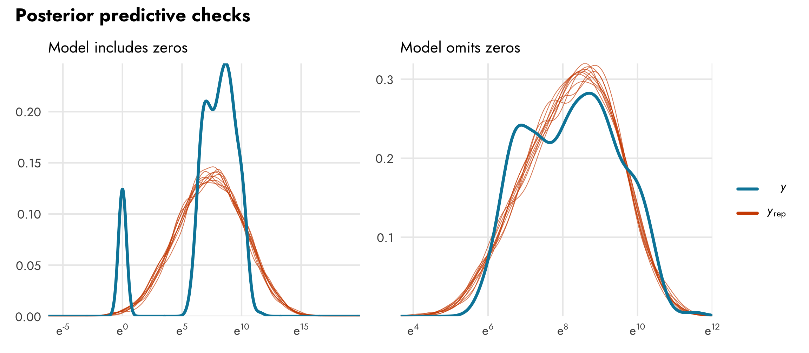
3. Hurdle lognormal model
We thus have a dilemma. If we omit the zeros, we’ll get a good, accurate model fit for non-zero data, but we’ll be throwing away all the data with zeros (in this case that’s like 10% of the data!). If we include the zeros, we won’t be throwing any data away, but we’ll get a strange-fitting model that both under- and over-predicts values. So what do we do?!
We give up.
We live like economists and embrace OLS.
We use a model that incorporates information about both the zeros and the non-zeros!
In an earlier post, I show how zero-inflated beta regression works. Beta regression works well for outcomes that are bounded between 0 and 1, but they cannot model values that are exactly 0 or 1. To get around this, it’s possible to model multiple processes simultaneously:
- A logistic regression model that predicts if an outcome is 0 or not
- A beta regression model that predicts if an outcome is between 0 and 1 if it’s not zero
We can use a similar mixture process for outcomes that don’t use beta regression. For whatever reason, instead of calling these models zero-inflated, we call them hurdle models, and brms includes four different built-in families:
- Use a logistic regression model that predicts if an outcome is 0 or not (this is the hurdle part)
- Use a lognormal (
hurdle_lognormal()), gamma (hurdle_gamma()), Poisson (hurdle_poisson()), or negative binomial (hurdle_negbinomial()) model for outcomes that are not zero
As we do with zero-inflated beta regression, we have to specify two different processes when dealing with hurdle models: (1) the main outcome and (2) the binary hurdle process, or hu.
Intercept-only hurdle model
To help with the intuition, we’ll first run a model where we don’t actually define a real model for hu—it’ll just return the intercept, which will show the proportion of GDP per capita that is zero. We’ll use the hurdle_lognormal() family, since, as we’ve already seen, our GDP per capita measure is exponentially distributed. Through the magic of the lognormal family, we don’t actually need to feed the model logged GDP per capita—it handles the logging for us behind the scenes automatically.
model_gdp_hurdle <- brm(
bf(gdpPercap ~ lifeExp,
hu ~ 1),
data = gapminder,
family = hurdle_lognormal(),
chains = CHAINS, iter = ITER, warmup = WARMUP, seed = BAYES_SEED,
silent = 2
)tidy(model_gdp_hurdle)
## # A tibble: 4 × 8
## effect component group term estimate std.error conf.low conf.high
## <chr> <chr> <chr> <chr> <dbl> <dbl> <dbl> <dbl>
## 1 fixed cond <NA> (Intercept) 3.47 0.0956 3.28 3.66
## 2 fixed cond <NA> hu_(Intercept) -2.13 0.0781 -2.28 -1.98
## 3 fixed cond <NA> lifeExp 0.0786 0.00154 0.0755 0.0816
## 4 ran_pars cond Residual sd__Observation 0.736 0.0133 0.710 0.762The results from this model are a little different now. The coefficients for the regular part of the model ((Intercept) and lifeExp) are nearly identical to the zero-free model we made earlier (model_log_gdp_no_zeros), and we can interpret them just like we did before: a one-year increase in life expectancy is associated with a 7.9% increase in GDP per capita, on average.
We also have a coefficient with a hu_ prefix: hu_(Intercept). This is the intercept for the logistic regression model used for the hurdle (0/not 0) process, and it’s measured on the logit scale. That means we can back-transform it to proportions or probabilities with plogis():
hu_intercept <- tidy(model_gdp_hurdle) |>
filter(term == "hu_(Intercept)") |>
pull(estimate)
# Logit scale intercept
hu_intercept
## b_hu_Intercept
## -2.13
# Transformed to a probability/proportion
plogis(hu_intercept)
## b_hu_Intercept
## 0.106Since the hurdle part of the model includes only the intercept, this value represents the proportion of zeros in the data, or 10.6%. We can confirm with some dplyr magic:
gapminder |>
count(is_zero) |>
mutate(prop = n / sum(n))
## # A tibble: 2 × 3
## is_zero n prop
## <lgl> <int> <dbl>
## 1 FALSE 1502 0.894
## 2 TRUE 178 0.106They’re the same!
The coefficients for the non-zero part of the model are basically the same as what we found with model_log_gdp_no_zeros, so why go through the hassle of creating a mixture model with the zero-process? Why not just filter out the zeros?
Because we combined the two processes in the same model, both processes are incorporated in the posterior distribution of GDP per capita. We can confirm this with a posterior predictive check. In the plot on the left, we can see that the model fits the exponential distribution of the data pretty well. It fits the zeros too, but we can’t actually see that part because of how small the plot is. To highlight the zero process, in the plot on the right we log the predicted values. Look how well those ■ orange posterior draws fit the actual ■ blue data!
# Exponential
pp_check(model_gdp_hurdle)
# Logged
pred <- posterior_predict(model_gdp_hurdle)
bayesplot::ppc_dens_overlay(y = log1p(gapminder$gdpPercap),
yrep = log1p(pred[1:10,]))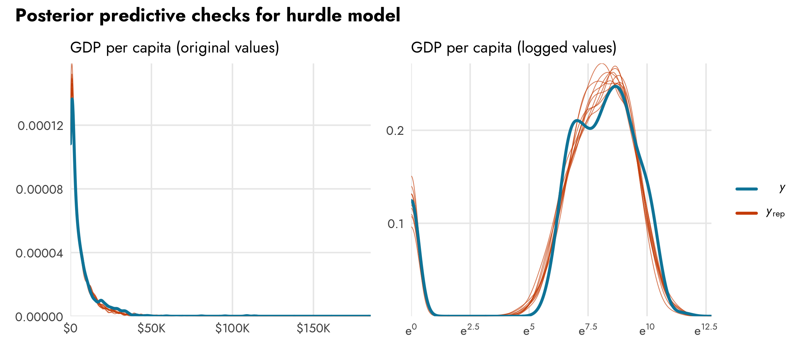
Additionally, when we make predictions, most of the predicted values will be some big number, but about 10% of them will be 0, corresponding to the modeled proportion of zeros. Any predictions we make using the posterior from the model should inherently reflect the zero process. If we make a histogram of predicted draws from the model, we’ll see around 10% of the predictions are 0, as expected:
pred_gdp_hurdle <- model_gdp_hurdle |>
predicted_draws(newdata = tibble(lifeExp = 60)) |>
mutate(is_zero = .prediction == 0,
.prediction = ifelse(is_zero, .prediction - 0.1, .prediction))
ggplot(pred_gdp_hurdle, aes(x = .prediction)) +
geom_histogram(aes(fill = is_zero), binwidth = 2500,
boundary = 0, color = "white") +
geom_vline(xintercept = 0) +
scale_x_continuous(labels = label_dollar(scale_cut = cut_short_scale())) +
scale_fill_manual(values = c(clrs[4], clrs[1]),
guide = guide_legend(reverse = TRUE)) +
labs(x = "GDP per capita", y = "Count", fill = "Is zero?",
title = "Predicted GDP per capita from hurdle model") +
coord_cartesian(xlim = c(-2500, 75000)) +
theme_nice() +
theme(legend.position = "bottom")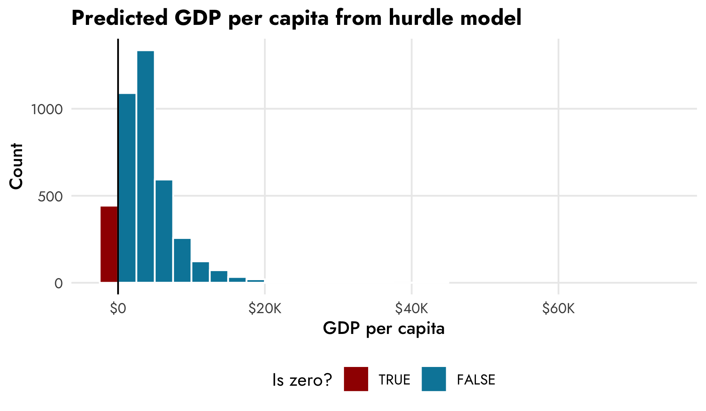
Hurdle model with additional terms
Right now, all we’ve modeled is the overall proportion of 0s. We haven’t modeled what determines those zeros. Fortunately in this case we know what that process is—we made it so that rows with a life expectancy of less than 50 had a 30% chance of being zero, while rows with a life expectancy of greater than 50 had a 2% chance of being zero. Life expectancy should thus strongly predict the 0/not 0 process. Let’s include it in the hu part of the model:
model_gdp_hurdle_life <- brm(
bf(gdpPercap ~ lifeExp,
hu ~ lifeExp),
data = gapminder,
family = hurdle_lognormal(),
chains = CHAINS, iter = ITER, warmup = WARMUP, seed = BAYES_SEED,
silent = 2
)tidy(model_gdp_hurdle_life)
## # A tibble: 5 × 8
## effect component group term estimate std.error conf.low conf.high
## <chr> <chr> <chr> <chr> <dbl> <dbl> <dbl> <dbl>
## 1 fixed cond <NA> (Intercept) 3.47 0.0924 3.29 3.65
## 2 fixed cond <NA> hu_(Intercept) 3.15 0.415 2.34 3.99
## 3 fixed cond <NA> lifeExp 0.0785 0.00149 0.0756 0.0815
## 4 fixed cond <NA> hu_lifeExp -0.0992 0.00844 -0.116 -0.0830
## 5 ran_pars cond Residual sd__Observation 0.736 0.0131 0.710 0.761Extracting and interpreting coefficients from a hurdle model
More on average marginal effects
After writing this guide, I wrote another detailed guide about the exact differences between average marginal effects, marginal effects at the mean, and a bunch of other marginal-related things, comparing emmeans with marginaleffects, two packages that take different approaches to calculating marginal effects from regression models. In the rest of this guide, I’m pretty inexact about the nuances between marginal effects and the output of emtrends(), which technically returns marginal effects at the mean and not average marginal effects. So keep that caveat in mind throughout.
You can extract non-hurdled effects, hurdled effects, and expected values from these models using either emmeans or marginaleffects. I use emmeans throughout the rest of this guide; see this vignette for an example with marginaleffects.
In this model, the non-hurdled coefficients are the same as before—a one-year increase in life expectancy is still associated with a 7.8% increase in GDP per capita, on average. But now we have a new term, hu_lifeExp, which shows the effect of life expectancy in the hurdling process. Since this is on the logit scale, we can combine it with the hurdle intercept and transform the coefficient into percentage points (see Steven Miller’s lab script here for more on this process, or this section on fractional logistic regression):
hurdle_intercept <- tidy(model_gdp_hurdle_life) |>
filter(term == "hu_(Intercept)") |>
pull(estimate)
hurdle_lifeexp <- tidy(model_gdp_hurdle_life) |>
filter(term == "hu_lifeExp") |>
pull(estimate)
plogis(hurdle_intercept + hurdle_lifeexp) - plogis(hurdle_intercept)
## b_hu_Intercept
## -0.00408A one-year increase in life expectancy thus decreases the probability of seeing a 0 in GDP per capita by 0.41 percentage points, on average. That’s neat!
Doing the complicated plogis(intercept + coefficient) - plogis(intercept) to convert logit-scale marginal effects and logit-scale predicted values as percentage points is tricky, though, especially once more coefficients are involved. It’s easy to mess up that math.
Instead, we can calculate marginal effects automatically using a couple different methods:
- brms’s
conditonal_effects()will plot predicted values of specific coefficients while holding all other variables constant, and it converts the results to their original scales. It automatically creates a plot, which is nice, but extracting the data out of the object is a little tricky and convoluted. - Packages like emmeans or marginaleffects can calculate marginal effects and predicted values on their original scales too. For more details, see my blog post on beta regression, or the documentation for emmeans or marginaleffects. Also see this mega detailed guide here for more about marginal effects.
brms::conditional_effects() with hurdle models
Since we’re working with a mixture model, the syntax for dealing with conditional/marginal effects is a little different, as the lifeExp variable exists in both the non-zero and the zero processes of the model. We can specify which version of lifeExp we want to work with using the dpar argument (distributional parameter) in conditional_effects(). By default, conditional_effects() will return the marginal/conditional means of the combined process using both the non-zero part mu and the zero part hu. If we want to see the 0/not 0 hurdle part, we can specify dpar = "hu“. The conditional_effects() function helpfully converts the predicted values into their original scales: when showing predicted life expectancy, it unlogs the values; when showing predicted proportion of zeros, it unlogits the values.
We can see both processes of the model simultaneously—at low levels of life expectancy, the probability of reporting no GDP per capita is fairly high, and the predicted level of GDP per capita is really low. As life expectancy increases, the probability of seeing a 0 drops and predicted wealth increases.
(Note that these plots look fancier than what you normally get when just running conditional_effects(model_name) in R. That’s because I extracted the plot data and built my own graph for this post. You can see the code for that at the source Rmd for this post.)
conditional_effects(model_gdp_hurdle_life)
conditional_effects(model_gdp_hurdle_life, dpar = "hu")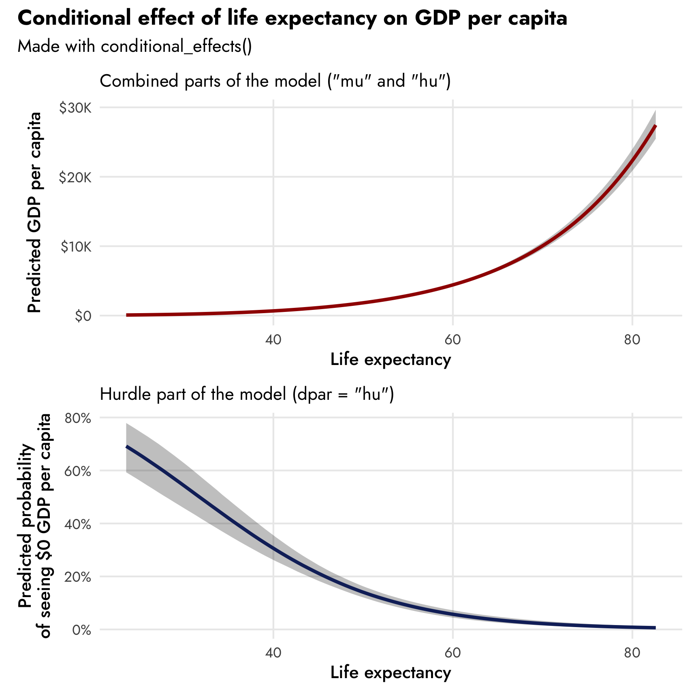
emmeans with hurdle models
While conditional_effects() is great for a quick marginal effects plot like this, we can’t see just the mu part of the model in isolation. More importantly, plots alone don’t help with determining the exact slope of the line at each point on the original scale. We know from the model results that a one-year increase in life expectancy is associated with a 7.8% increase in GDP per capita, and that’s apparent in the curviness of the conditional effects plot. But if we want to know the original-scale slope at 60 years, for instance (e.g. an increase in life expectancy from 60 to 61 years is associated with a $X increase in GDP per capita), that’s trickier. It’s even trickier when working with the hurdle part of the model. Moving from 60 to 61 years decreases the probability of seeing a 0 by… some percentage point amount… but without doing a bunch of plogis() math, it’s not obvious how to get that value. Fortunately emmeans::emtrends() makes this easy. Like brms::conditional_effects(), by default, functions from emmeans like emmeans() and emtrends() will return the marginal means of the combined non-zero and zero/not-zero process, or both mu and hu. We can specify dpar = "mu" to get just the mu part (both logged and unlogged) and dpar = "hu" to get the logit part (both as logits and probabilities).
Non-zero mu part only
We can feed the model a bunch of possible different life expectancy values to see how steep the slope of the non-zero part is at each value. Because there are no interaction terms or random effects or anything fancy, this log-scale slope will be the same at every possible value of life expectancy—GDP per capita increases by 7.8% for each one-year increase in life expectancy.
model_gdp_hurdle_life |>
emtrends(~ lifeExp, var = "lifeExp", dpar = "mu",
at = list(lifeExp = seq(30, 80, 10)))
## lifeExp lifeExp.trend lower.HPD upper.HPD
## 30 0.0784 0.0756 0.0815
## 40 0.0784 0.0756 0.0815
## 50 0.0784 0.0756 0.0815
## 60 0.0784 0.0756 0.0815
## 70 0.0784 0.0756 0.0815
## 80 0.0784 0.0756 0.0815
##
## Point estimate displayed: median
## HPD interval probability: 0.95If we want to interpret more concrete numbers (i.e. dollars instead of percents), we should back-transform these slopes to the original dollar scale. This is a little tricky, though, because GDP per capita was logged before going into the model. If we try including regrid = "response" to have emtrends() back-transform the result, it won’t change anything:
model_gdp_hurdle_life |>
emtrends(~ lifeExp, var = "lifeExp", dpar = "mu", regrid = "response",
at = list(lifeExp = seq(30, 80, 10)))
## lifeExp lifeExp.trend lower.HPD upper.HPD
## 30 0.0784 0.0756 0.0815
## 40 0.0784 0.0756 0.0815
## 50 0.0784 0.0756 0.0815
## 60 0.0784 0.0756 0.0815
## 70 0.0784 0.0756 0.0815
## 80 0.0784 0.0756 0.0815
##
## Point estimate displayed: median
## HPD interval probability: 0.95Behind the scenes, emtrends() calculates the numeric derivative (or instantaneous slope) by adding a tiny amount to each of the given levels of lifeExp (i.e. lifeExp = 30 and lifeExp = 30.001) and then calculates the slope of the line that goes through each of those predicted points. In order to back-transform the slopes, we need to transform the predicted values before calculating the instantaneous slopes. To get this ordering right, we need to include a couple extra arguments: tran = "log" to trick emtrends() into thinking that it’s working with logged values and type = "response" to tell emtrends() to unlog the estimates after calculating the slopes. (This only works with the development version of brms installed on or after May 31, 2022; huge thanks to Mattan Ben-Shachar for originally pointing this out and for opening an issue and getting it fixed at both brms and emmeans!)
model_gdp_hurdle_life |>
emtrends(~ lifeExp, var = "lifeExp", dpar = "mu",
regrid = "response", tran = "log", type = "response",
at = list(lifeExp = seq(30, 80, 10)))
## lifeExp lifeExp.trend lower.HPD upper.HPD
## 30 27 25 29
## 40 59 56 61
## 50 128 124 133
## 60 281 268 296
## 70 617 573 664
## 80 1352 1219 1489
##
## Point estimate displayed: median
## HPD interval probability: 0.95Notice how they’re no longer the same at each level—that’s because in the non-logged world, this trend is curved. These represent the instantaneous slopes at each of these values of life expectancy in just the mu part of the model. At 60 years, a one-year increase in life expectancy is associated with a \$281 increase in GDP per capita; at 70, it’s associated with a \$617 increase.
Alternatively, we can use the marginaleffects package to get the instantaneous mu-part slopes as well. Here we just need to tell it to exponentiate the predicted values for each level of life expectancy before calculating the numeric derivative using the transform_pre = "expdydx" argument. (This also only works with the development version of marginaleffects installed on or after May 31, 2022.)
library(marginaleffects)
model_gdp_hurdle_life |> comparisons(
newdata = datagrid(lifeExp = seq(30, 80, 10)),
dpar = "mu",
transform_pre = "expdydx"
)
## rowid type term contrast comparison conf.low conf.high predicted predicted_hi predicted_lo gdpPercap lifeExp eps
## 1 1 response lifeExp exp(dY/dX) 26.5 24.9 28.3 5.83 5.83 5.83 6797 30 0.0059
## 2 2 response lifeExp exp(dY/dX) 58.1 55.7 60.7 6.61 6.61 6.61 6797 40 0.0059
## 3 3 response lifeExp exp(dY/dX) 127.4 122.8 132.2 7.40 7.40 7.40 6797 50 0.0059
## 4 4 response lifeExp exp(dY/dX) 279.1 265.7 294.0 8.18 8.18 8.18 6797 60 0.0059
## 5 5 response lifeExp exp(dY/dX) 611.7 569.5 660.5 8.97 8.97 8.97 6797 70 0.0059
## 6 6 response lifeExp exp(dY/dX) 1341.2 1215.6 1490.7 9.75 9.75 9.75 6797 80 0.0059For fun, we can plot the values of these slopes across a range of marginal effects. Importantly, the y-axis here is not the predicted value of GDP per capita—it’s the slope of life expectancy, or the first derivative of the ■ red line we made earlier with conditional_effects().
model_gdp_hurdle_life |>
emtrends(~ lifeExp, var = "lifeExp", dpar = "mu",
regrid = "response", tran = "log", type = "response",
at = list(lifeExp = seq(30, 80, 1))) |>
gather_emmeans_draws() |>
ggplot(aes(x = lifeExp, y = .value)) +
stat_lineribbon(size = 1, color = clrs[1]) +
scale_fill_manual(values = colorspace::lighten(clrs[1], c(0.95, 0.7, 0.4))) +
scale_y_continuous(labels = label_dollar()) +
labs(x = "Life expectancy", y = "Value of lifeExp coefficient\n(marginal effect)",
fill = "Credible interval",
title = "Marginal effect of life expectancy on GDP per capita",
subtitle = "(mu part of model only)") +
theme_nice() +
theme(legend.position = "bottom")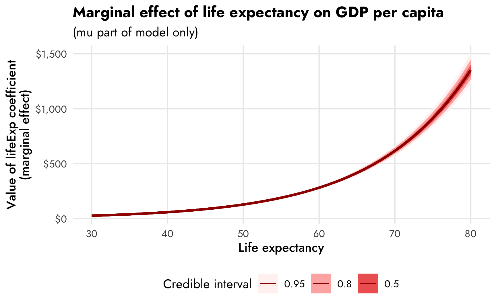
Zero hu part only
We can also deal with the hurdled parts of the model if we specify dpar = "hu", like here, where we can look at the hu_lifeExp coefficient at different levels of life expectancy. The slope is consistent across the whole range, but that’s because it’s measured in logit units:
# Logit-scale slopes
model_gdp_hurdle_life |>
emtrends(~ lifeExp, var = "lifeExp", dpar = "hu",
at = list(lifeExp = seq(30, 80, 10)))
## lifeExp lifeExp.trend lower.HPD upper.HPD
## 30 -0.0991 -0.117 -0.0839
## 40 -0.0991 -0.117 -0.0839
## 50 -0.0991 -0.117 -0.0839
## 60 -0.0991 -0.117 -0.0839
## 70 -0.0991 -0.117 -0.0839
## 80 -0.0991 -0.117 -0.0839
##
## Point estimate displayed: median
## HPD interval probability: 0.95We can convert these slopes into proportions or percentage points by including the regrid = "response" argument. Note that we don’t need to also include tran = "log" and type = "response" like we did for the mu part—that’s because we’re not working with an outcome that’s on a strange pre-logged scale like gdpPercap is in the mu part. Here emtrends() knows that there’s a difference between the link (logit) and the response (percentage point) scales and it can switch between them easily.
# Percentage-point-scale slopes
model_gdp_hurdle_life |>
emtrends(~ lifeExp, var = "lifeExp", dpar = "hu", regrid = "response",
at = list(lifeExp = seq(30, 80, 10)))
## lifeExp lifeExp.trend lower.HPD upper.HPD
## 30 -0.02452 -0.02790 -0.02116
## 40 -0.02102 -0.02626 -0.01669
## 50 -0.01194 -0.01414 -0.00964
## 60 -0.00532 -0.00612 -0.00450
## 70 -0.00213 -0.00264 -0.00163
## 80 -0.00082 -0.00114 -0.00053
##
## Point estimate displayed: median
## HPD interval probability: 0.95The slope of the hurdle part is fairly steep and negative at low levels of life expectancy (-0.025 at 30 years), but it starts leveling out as life expectancy increases (-0.002 at 70 years).
Beyond emtrends(), we can use emmeans() to calculate predicted values of GDP per capita while holding all other variables constant. This is exactly what we did with conditional_effects() earlier—this just makes it easier to deal with the actual data itself instead of extracting the data from the ggplot object that conditional_effects() creates.
As we did with emtrends(), when dealing with the non-zero mu part we have to include all three extra regrid, tran, and type arguments to trick emmeans() into working with the pre-logged GDP values:
# Predicted GDP per capita, logged
model_gdp_hurdle_life |>
emmeans(~ lifeExp, var = "lifeExp", dpar = "mu",
at = list(lifeExp = seq(30, 80, 10)))
## lifeExp emmean lower.HPD upper.HPD
## 30 5.83 5.73 5.93
## 40 6.61 6.54 6.68
## 50 7.40 7.35 7.45
## 60 8.18 8.15 8.22
## 70 8.97 8.92 9.01
## 80 9.75 9.69 9.82
##
## Point estimate displayed: median
## HPD interval probability: 0.95
# Predicted GDP per capita, unlogged and back-transformed
model_gdp_hurdle_life |>
emmeans(~ lifeExp, var = "lifeExp", dpar = "mu",
regrid = "response", tran = "log", type = "response",
at = list(lifeExp = seq(30, 80, 10)))
## lifeExp response lower.HPD upper.HPD
## 30 340 309 374
## 40 745 695 797
## 50 1632 1558 1714
## 60 3579 3446 3710
## 70 7843 7480 8193
## 80 17184 16088 18392
##
## Point estimate displayed: median
## Results are back-transformed from the log scale
## HPD interval probability: 0.95When dealing with the hurdled part, we can convert the resulting logit-scale predictions to percentage points with just regrid = "response", again like we did with emtrends():
# Predicted proportion of zeros, logits
model_gdp_hurdle_life |>
emmeans(~ lifeExp, var = "lifeExp", dpar = "hu",
at = list(lifeExp = seq(30, 80, 10)))
## lifeExp emmean lower.HPD upper.HPD
## 30 0.18 -0.15 0.54
## 40 -0.82 -1.02 -0.59
## 50 -1.81 -1.97 -1.63
## 60 -2.80 -3.06 -2.55
## 70 -3.79 -4.21 -3.42
## 80 -4.78 -5.33 -4.24
##
## Point estimate displayed: median
## Results are given on the logit (not the response) scale.
## HPD interval probability: 0.95
# Predicted proportion of zeros, percentage points
model_gdp_hurdle_life |>
emmeans(~ lifeExp, var = "lifeExp", dpar = "hu", regrid = "response",
at = list(lifeExp = seq(30, 80, 10)))
## lifeExp response lower.HPD upper.HPD
## 30 0.544 0.464 0.633
## 40 0.306 0.260 0.352
## 50 0.140 0.121 0.163
## 60 0.057 0.044 0.072
## 70 0.022 0.014 0.031
## 80 0.008 0.005 0.014
##
## Point estimate displayed: median
## HPD interval probability: 0.95We can plot the results of emmeans() and create plots like the ones we made with conditional_effects(). I do this all the time in my regular research—I like being able to customize the plot fully rather than having to manipulate and readjust the pre-made conditional_effects() plot.
plot_emmeans1 <- model_gdp_hurdle_life |>
emmeans(~ lifeExp, var = "lifeExp", dpar = "mu",
regrid = "response", tran = "log", type = "response",
at = list(lifeExp = seq(30, 80, 1))) |>
gather_emmeans_draws() |>
mutate(.value = exp(.value)) |>
ggplot(aes(x = lifeExp, y = .value)) +
stat_lineribbon(size = 1, color = clrs[1]) +
scale_fill_manual(values = colorspace::lighten(clrs[1], c(0.95, 0.7, 0.4))) +
scale_y_continuous(labels = label_dollar()) +
labs(x = "Life expectancy", y = "Predicted GDP per capita",
subtitle = "Regular part of the model (dpar = \"mu\")",
fill = "Credible interval") +
theme_nice() +
theme(legend.position = "bottom")
plot_emmeans2 <- model_gdp_hurdle_life |>
emmeans(~ lifeExp, var = "lifeExp", dpar = "hu", regrid = "response",
at = list(lifeExp = seq(30, 80, 1))) |>
gather_emmeans_draws() |>
ggplot(aes(x = lifeExp, y = .value)) +
stat_lineribbon(size = 1, color = clrs[5]) +
scale_fill_manual(values = colorspace::lighten(clrs[5], c(0.95, 0.7, 0.4))) +
scale_y_continuous(labels = label_percent()) +
labs(x = "Life expectancy", y = "Predicted probability\nof seeing $0 GDP per capita",
subtitle = "Hurdle part of the model (dpar = \"hu\")",
fill = "Credible interval") +
theme_nice() +
theme(legend.position = "bottom")
(plot_emmeans1 / plot_emmeans2) +
plot_annotation(title = "Conditional effect of life expectancy on GDP per capita",
subtitle = "Made with emmeans()",
theme = theme(plot.title = element_text(family = "Jost", face = "bold"),
plot.subtitle = element_text(family = "Jost")))
Both parts of the model simultaneously
So far we’ve looked at the mu and hu parts individually, but part of the magic of these models is that we can work with both processes simultaneously. When we ran conditional_effects(model_gdp_hurdle_life) without any dpar arguments, we saw predictions for both parts at the same time, but so far with emmeans() and emtrends(), we haven’t seen any of these combined values. To do this, we can calculate the expected value from the model and incorporate both parts simultaneously. In mathy terms, for this lognormal hurdle model, this is:
\[ \operatorname{E}[Y] = (1-\texttt{hu}) \times e^{\texttt{mu} + (\texttt{sigma}^2)/2} \]
We can calculate this with emtrends() by including the epred = TRUE argument (to get expected values). We don’t need to transform anything to the response scale, and we don’t need to define a specific part of the model (dpar = "mu" or dpar = "hu"), since the output will automatically be on the dollar scale:
# Dollar-scale slopes, incorporating both the mu and hu parts
model_gdp_hurdle_life |>
emtrends(~ lifeExp, var = "lifeExp", epred = TRUE,
at = list(lifeExp = seq(30, 80, 10)))
## lifeExp lifeExp.trend lower.HPD upper.HPD
## 30 27 24 30
## 40 74 69 79
## 50 170 162 179
## 60 373 354 394
## 70 812 757 879
## 80 1775 1612 1970
##
## Point estimate displayed: median
## HPD interval probability: 0.95We can also get predicted values with emmeans():
# Dollar-scale predictions, incorporating both the mu and hu parts
model_gdp_hurdle_life |>
emmeans(~ lifeExp, epred = TRUE,
at = list(lifeExp = seq(30, 80, 10)))
## lifeExp emmean lower.HPD upper.HPD
## 30 203 162 248
## 40 677 612 745
## 50 1839 1737 1947
## 60 4425 4213 4597
## 70 10056 9572 10564
## 80 22336 20964 24078
##
## Point estimate displayed: median
## HPD interval probability: 0.95And we can plot these combined predictions too. This is identical to conditional_effects().
model_gdp_hurdle_life |>
emmeans(~ lifeExp, epred = TRUE,
at = list(lifeExp = seq(30, 80, 1))) |>
gather_emmeans_draws() |>
ggplot(aes(x = lifeExp, y = .value)) +
stat_lineribbon(size = 1, color = clrs[4]) +
scale_fill_manual(values = colorspace::lighten(clrs[4], c(0.95, 0.7, 0.4))) +
scale_y_continuous(labels = label_dollar()) +
labs(x = "Life expectancy", y = "Predicted GDP per capita",
title = "Predicted values incorporating both hu and mu",
subtitle = "epred = TRUE",
fill = "Credible interval") +
theme_nice() +
theme(legend.position = "bottom")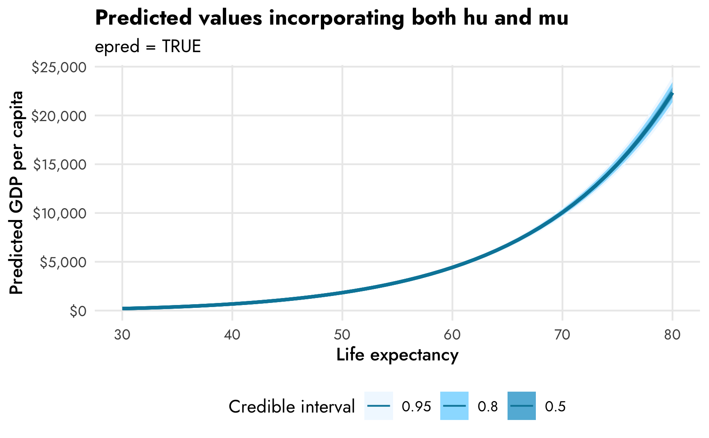
All three types of predictions at the same time
For fun, we can plot the combined predictions, the mu-only predictions, and the hu-only predictions at the same time to see how they differ:
plot_emmeans0 <- model_gdp_hurdle_life |>
emmeans(~ lifeExp, var = "lifeExp", epred = TRUE,
at = list(lifeExp = seq(30, 80, 1))) |>
gather_emmeans_draws() |>
ggplot(aes(x = lifeExp, y = .value)) +
stat_lineribbon(size = 1, color = clrs[4]) +
scale_fill_manual(values = colorspace::lighten(clrs[4], c(0.95, 0.7, 0.4))) +
scale_y_continuous(labels = label_dollar()) +
labs(x = "Life expectancy", y = "Predicted GDP per capita",
subtitle = "Expected values from mu and hu parts (epred = TRUE)",
fill = "Credible interval") +
theme_nice() +
theme(legend.position = "bottom")
(plot_emmeans0 / plot_emmeans1 / plot_emmeans2) +
plot_annotation(title = "Conditional effect of life expectancy on GDP per capita",
theme = theme(plot.title = element_text(family = "Jost", face = "bold"),
plot.subtitle = element_text(family = "Jost")))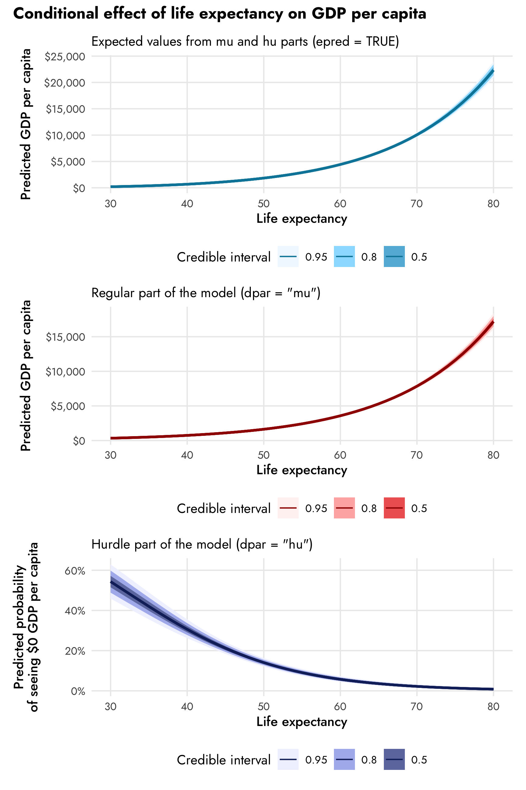
The combined expected values produce larger predictions (with $10,000 at 70 years, for instance) than the mu part alone (with $7,500ish at 70 years). In real life, it’s probably best to work with predictions that incorporate both parts of the model, since that’s the whole point of doing this combined mixture model in the first place (otherwise we could just fit two separate models ourselves), but it’s super neat that we can still work with the predictions and slopes for the mu and hu parts separately.
Predictions with hurdle models
The underlying prediction functions from brms—as well as other functions that wrap around them like gather_draws() from tidybayes—also incorporate the zero process. We can confirm this by predicting GDP per capita for two different values of life expectancy. There’s a huge proportion of zeros for countries with low life expectancy, and overall predicted GDP per capita is really low. There’s a much smaller proportion of zeros for countries with high life expectancy, and the distribution of wealth is more spread out.
pred_gdp_hurdle_life <- model_gdp_hurdle_life |>
predicted_draws(newdata = tibble(lifeExp = c(40, 70))) |>
mutate(is_zero = .prediction == 0,
.prediction = ifelse(is_zero, .prediction - 0.1, .prediction)) |>
mutate(nice_life = paste0(lifeExp, " year life expectancy"))
ggplot(pred_gdp_hurdle_life, aes(x = .prediction)) +
geom_histogram(aes(fill = is_zero), binwidth = 2500,
boundary = 0, color = "white") +
geom_vline(xintercept = 0) +
scale_x_continuous(labels = label_dollar(scale_cut = cut_short_scale())) +
scale_fill_manual(values = c(clrs[4], clrs[1]),
guide = guide_legend(reverse = TRUE)) +
labs(x = "GDP per capita", y = NULL, fill = "Is zero?",
title = "Predicted GDP per capita at different life expectancies") +
coord_cartesian(xlim = c(-2500, 50000)) +
facet_wrap(vars(nice_life)) +
theme_nice() +
theme(legend.position = "bottom")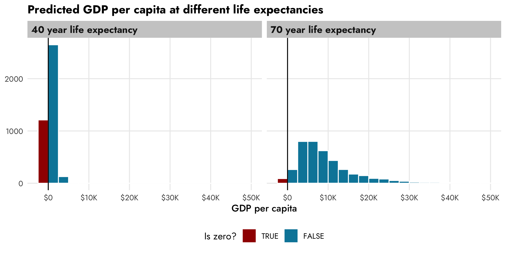
4. Hurdle lognormal model with fancy multilevel things
So far we’ve actually been modeling this data all wrong. This is panel data, which means each country appears multiple times in the data across different years. We’ve been treating each row as completely independent, but that’s not the case—GDP per capita in all these Afghanistan rows, for instance, is dependent on the year, and there are Afghanistan-specific trends that distinguish its GDP per capita from that of Albania. We need to take the structure of the panel data into account.
head(gapminder)
## # A tibble: 6 × 8
## country continent year lifeExp pop gdpPercap log_gdpPercap is_zero
## <fct> <fct> <int> <dbl> <int> <dbl> <dbl> <lgl>
## 1 Afghanistan Asia 1952 28.8 8425333 779. 6.66 FALSE
## 2 Afghanistan Asia 1957 30.3 9240934 821. 6.71 FALSE
## 3 Afghanistan Asia 1962 32.0 10267083 853. 6.75 FALSE
## 4 Afghanistan Asia 1967 34.0 11537966 836. 6.73 FALSE
## 5 Afghanistan Asia 1972 36.1 13079460 0 0 TRUE
## 6 Afghanistan Asia 1977 38.4 14880372 786. 6.67 FALSEI have a whole guide about how to do this with multilevel models—you should check it out for tons of details.
Here we’ll make it so each continent gets its own intercept, as well as continent-specific offsets to the slopes for life expectancy and year. Since we know the zero process (low values of life expectancy make it more likely to be 0), we’ll define a simple model there (though we could get as complex as we want). Ordinarily we’d want to do country-specific effects, but for the sake of computational time, we’ll just look at continents instead. (And even then, this takes a while! On my fancy M1 MacBook, this takes about 4 minutes; and there are all sorts of issues with divergent transitions that I’m going to ignore. In real life I’d set proper priors and scale the data down, but in this example I won’t worry about all that.)
# Shrink down year to make the model go faster
gapminder_scaled <- gapminder |>
mutate(year_orig = year,
year = year - 1952)
model_gdp_hurdle_panel <- brm(
bf(gdpPercap ~ lifeExp + year + (1 + lifeExp + year | continent),
hu ~ lifeExp,
decomp = "QR"),
data = gapminder_scaled,
family = hurdle_lognormal(),
chains = CHAINS, iter = ITER, warmup = WARMUP, seed = BAYES_SEED,
silent = 2,
threads = threading(2) # Two CPUs per chain to speed things up
)
## Warning: 248 of 4000 (6.0%) transitions ended with a divergence.
## See https://mc-stan.org/misc/warnings for details.
## Warning: 541 of 4000 (14.0%) transitions hit the maximum treedepth limit of 10.
## See https://mc-stan.org/misc/warnings for details.tidy(model_gdp_hurdle_panel)
## # A tibble: 12 × 8
## effect component group term estimate std.error conf.low conf.high
## <chr> <chr> <chr> <chr> <dbl> <dbl> <dbl> <dbl>
## 1 fixed cond <NA> (Intercept) 3.29 1.03 1.19 5.47
## 2 fixed cond <NA> hu_(Intercept) 3.15 0.417 2.36 3.99
## 3 fixed cond <NA> hu_lifeExp -0.0993 0.00845 -0.117 -0.0834
## 4 fixed cond <NA> lifeExp 0.0846 0.0169 0.0491 0.120
## 5 fixed cond <NA> year -0.00990 0.00949 -0.0309 0.00985
## 6 ran_pars cond continent sd__(Intercept) 2.03 0.889 0.880 4.30
## 7 ran_pars cond continent sd__lifeExp 0.0335 0.0164 0.0140 0.0749
## 8 ran_pars cond continent sd__year 0.0169 0.0148 0.00374 0.0568
## 9 ran_pars cond continent cor__(Intercept).lifeExp -0.655 0.322 -0.986 0.215
## 10 ran_pars cond continent cor__(Intercept).year -0.161 0.412 -0.823 0.682
## 11 ran_pars cond continent cor__lifeExp.year 0.0337 0.423 -0.759 0.779
## 12 ran_pars cond Residual sd__Observation 0.678 0.0127 0.653 0.703This complex model has a whole bunch of moving parts now! We have coefficients for the 0/not 0 process, coefficients for the non-zero process, and random effects (and their corresponding correlations) for the non-zero process. The hurdle coefficients are the same that we saw earlier, since that part of the model is unchanged. The non-zero coefficients now take the panel structure of the data into account, showing that on average, a one-year change in life expectancy is associated with a 8.5% increase in GDP per capita, on average.
The actual dollar amount of GDP per capita depends on the existing level of life expectancy, but as before, we can visualize this with either conditional_effects() or emmeans(). We’ll do it both ways for fun, and we’ll look at predicted GDP per capita across different continents and years too, since we have that information.
In order to calculate conditional effects with conditional_effects(), we have to use some special syntax. We need to (1) specify re_formula = NULL so that the predictions take the random effects structure into account (see this post for way more about that), and (2) create a data frame of year and continent values, along with a special cond__ column that will be used for the facet titles.
conditions <- expand_grid(year = c(0, 55),
continent = unique(gapminder$continent)) |>
mutate(cond__ = paste0(year + 1952, ": ", continent))
conditional_effects(model_gdp_hurdle_panel, effects = "lifeExp",
conditions = conditions,
re_formula = NULL) |>
plot(ncol = 4)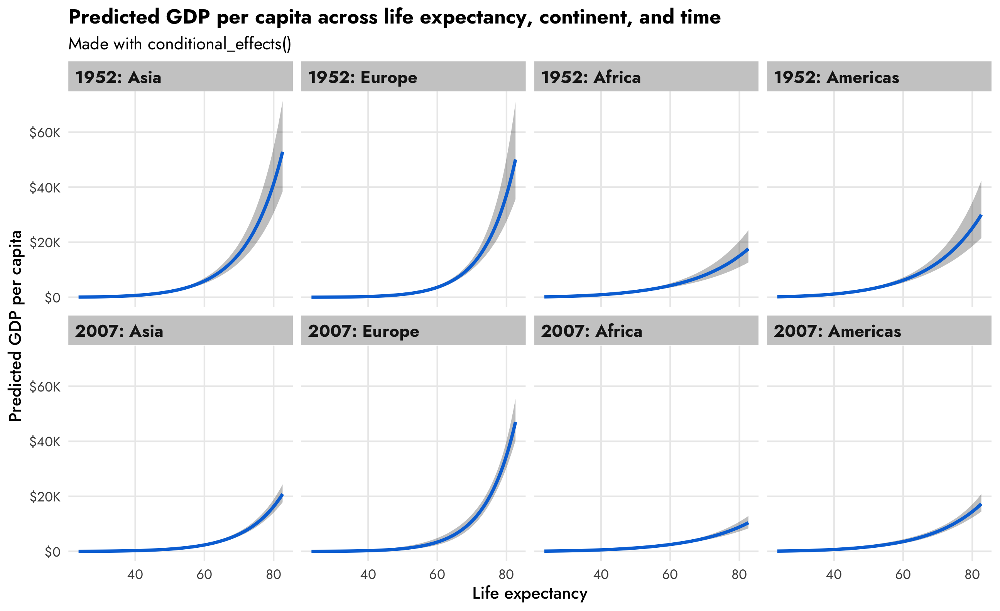
This is so neat! Across all continents, GDP per capita increases as life expectancy increases, but that relationship looks different across continents (compare Asia with Africa, for instance), and across time (1952 Asia looks a lot different from 2007 Asia).
The conditional_effects() function is great for a quick look at the predicted values, but if we want complete control over the predictions and the plot, we can use emmeans() instead:
model_gdp_hurdle_panel |>
emmeans(~ lifeExp + year + continent, var = "lifeExp",
at = list(year = c(0, 55),
continent = unique(gapminder$continent),
lifeExp = seq(30, 80, 1)),
epred = TRUE, re_formula = NULL) |>
gather_emmeans_draws() |>
mutate(year = year + 1952) |>
ggplot(aes(x = lifeExp, y = .value)) +
stat_lineribbon(aes(color = continent, fill = continent), size = 1, alpha = 0.25) +
scale_fill_manual(values = clrs[1:4], guide = "none") +
scale_color_manual(values = clrs[1:4], guide = "none") +
scale_y_continuous(labels = label_dollar()) +
facet_nested_wrap(vars(year, continent), nrow = 2,
strip = strip_nested(
text_x = list(element_text(family = "Jost",
face = "bold"), NULL),
background_x = list(element_rect(fill = "grey92"), NULL),
by_layer_x = TRUE)) +
labs(x = "Life expectancy", y = "Predicted GDP per capita",
title = "Predicted GDP per capita across life expectancy, continent, and time") +
theme_nice() +
theme(legend.position = "bottom")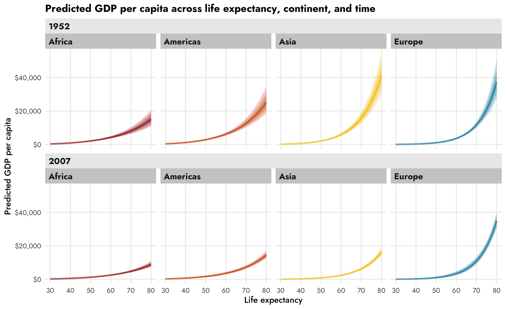
We can also look at the slopes or marginal effects of these predictions, which lets us answer questions like “how much does GDP per capita increase in Asia countries with high life expectancy in 2007.” To do this, we’ll turn to emtrends() to see predicted slopes for lifeExp while holding other model variables constant.
If we leave the coefficients on the log scale, there won’t be any change across life expectancy, since the trend increases by the same percentage each year. There are continent-specific differences now, though: the relationship is steeper in Europe (11.4%) than in Africa (6.1%)
ame_model_gdp_hurdle_panel_log <- model_gdp_hurdle_panel |>
emtrends(~ lifeExp + year + continent,
var = "lifeExp",
at = list(year = 0, continent = unique(gapminder$continent),
lifeExp = c(40, 70)),
re_formula = NULL)
ame_model_gdp_hurdle_panel_log
## lifeExp year continent lifeExp.trend lower.HPD upper.HPD
## 40 0 Africa 0.0607 0.0529 0.0676
## 70 0 Africa 0.0607 0.0529 0.0676
## 40 0 Americas 0.0676 0.0561 0.0793
## 70 0 Americas 0.0676 0.0561 0.0793
## 40 0 Asia 0.0945 0.0863 0.1029
## 70 0 Asia 0.0945 0.0863 0.1029
## 40 0 Europe 0.1140 0.0959 0.1329
## 70 0 Europe 0.1140 0.0959 0.1329
##
## Point estimate displayed: median
## HPD interval probability: 0.95
ame_model_gdp_hurdle_panel_log |>
gather_emmeans_draws() |>
mutate(nice_life = paste0(lifeExp, " year life expectancy")) |>
ggplot(aes(x = .value, y = continent, fill = continent)) +
stat_slabinterval() +
scale_fill_manual(values = clrs[1:4], guide = "none") +
scale_x_continuous(labels = label_percent()) +
labs(x = "Marginal effect of life expectancy on GDP per capita", y = NULL,
title = "Marginal effect of life expectancy, log-scale coefficients") +
facet_wrap(vars(nice_life), ncol = 1) +
theme_nice()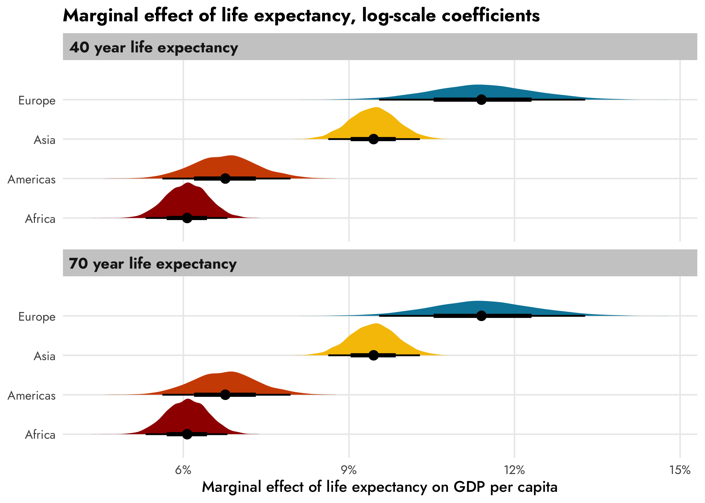
However, if we convert the coefficients to the original unlogged dollar scale, there are substantial changes across life expectancy, as we saw earlier. Only now we can also incorporate continent and year effects too. Asian countries with a 40-year life expectancy have a life expectancy slope of \$82, while Asian countries with a 70-year life expectancy have a slope of \$1,532, on average.
Neat!
ame_model_gdp_hurdle_panel_nolog <- model_gdp_hurdle_panel |>
emtrends(~ lifeExp + year + continent,
var = "lifeExp",
at = list(year = 0, continent = unique(gapminder$continent),
lifeExp = c(40, 70)),
re_formula = NULL, epred = TRUE)
ame_model_gdp_hurdle_panel_nolog
## lifeExp year continent lifeExp.trend lower.HPD upper.HPD
## 40 0 Africa 85 72 97
## 70 0 Africa 508 343 696
## 40 0 Americas 115 96 136
## 70 0 Americas 881 591 1223
## 40 0 Asia 82 70 94
## 70 0 Asia 1532 1130 2021
## 40 0 Europe 39 25 54
## 70 0 Europe 1367 1017 1773
##
## Point estimate displayed: median
## HPD interval probability: 0.95
ame_model_gdp_hurdle_panel_nolog |>
gather_emmeans_draws() |>
mutate(nice_life = paste0(lifeExp, " year life expectancy")) |>
ggplot(aes(x = .value, y = continent, color = continent)) +
stat_pointinterval() +
scale_color_manual(values = clrs[1:4], guide = "none") +
scale_x_continuous(labels = label_dollar()) +
labs(x = "Marginal effect of life expectancy on GDP per capita", y = NULL,
title = "Marginal effect of life expectancy, dollar-scale coefficients") +
facet_wrap(vars(nice_life), ncol = 1, scales = "free_x") +
theme_nice()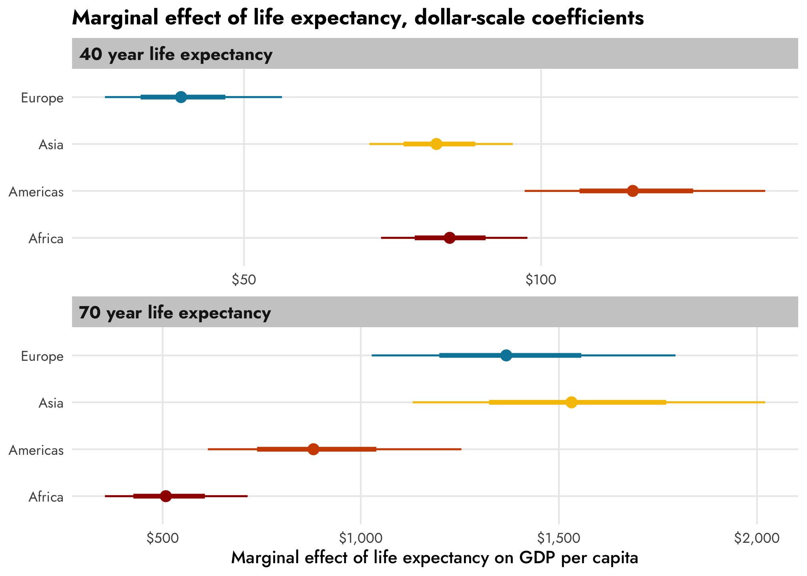
For extra bonus fun, we can look at how the dollar-scale marginal effect changes across more granular changes in life expectancy and across time and across continent.
ame_model_gdp_hurdle_panel_nolog_fancy <- model_gdp_hurdle_panel |>
emtrends(~ lifeExp + year + continent,
var = "lifeExp",
at = list(year = c(0, 55), continent = unique(gapminder$continent),
lifeExp = seq(40, 70, 2)),
epred = TRUE, re_formula = NULL)
ame_model_gdp_hurdle_panel_nolog_fancy |>
gather_emmeans_draws() |>
mutate(year = year + 1952) |>
ggplot(aes(x = .value, y = continent, color = lifeExp, group = lifeExp)) +
stat_pointinterval(position = "dodge", size = 0.75) +
scale_color_gradient(low = clrs[5], high = clrs[2],
guide = guide_colorbar(barwidth = 12, barheight = 0.5, direction = "horizontal")) +
scale_x_continuous(labels = label_dollar()) +
labs(x = "Value of lifeExp coefficient (marginal effect)", y = NULL,
color = "Life expectancy",
title = "Marginal effect of life expectancy on GDP per capita\nacross continent, time, and different values of life expectancy",
subtitle = "…all while incorporating information about the hurdle process!") +
facet_wrap(vars(year), ncol = 1) +
theme_nice() +
theme(legend.position = "bottom",
legend.title = element_text(vjust = 1))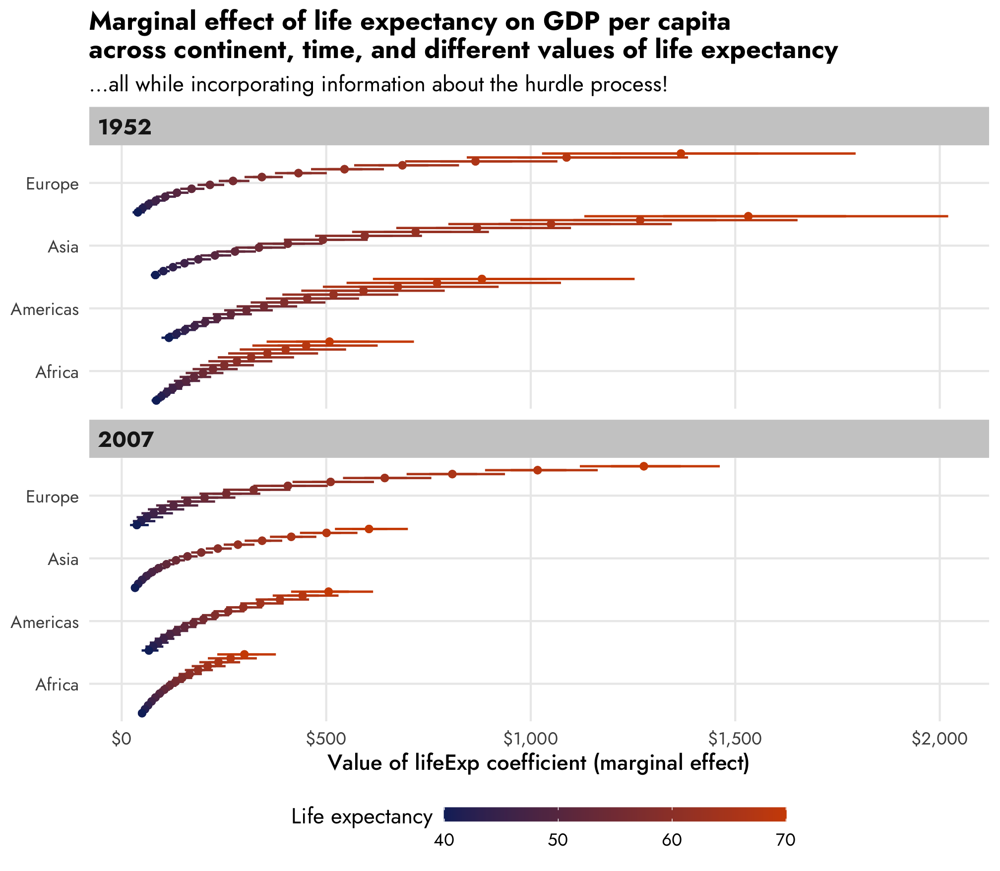
AHHH this is so cool. As life expectancy increases, the estimated lifeExp increases across all continents and across all years, but the trend behaves differently within each continent and within each year.
Normally distributed outcomes with zeros
brms comes with 4 different hurdle families and 6 different zero-inflated families. Working with hurdle_lognormal() in the gapminder example above was great because GDP per capita is exponentially distributed and well-suited for logging. But what if your outcome isn’t exponentially distributed, and doesn’t fit one of the other built-in hurdle or zero-inflated families (gamma, Poisson, negative binomial, beta, etc.)? What if you have something nice and linear already, but that also has a built-in zero process? Let’s see what we can do with that kind of outcome variable.
Explore data
We’ll play with the delightful palmerpenguins data. It’s nice and pristine and has no zeros, but like we did with the gapminder data, we’ll build in some of our own zeros. Here we’ll say that penguins with a flipper length of less than 190 mm will have a 30% chance of recording a 0 in body mass, while those with flippers longer than 190 mm will have a 2% chance.
penguins <- palmerpenguins::penguins |>
drop_na(sex) |>
# Make a bunch of weight values 0
mutate(prob_zero = ifelse(flipper_length_mm < 190, 0.3, 0.02),
will_be_zero = rbinom(n(), 1, prob = prob_zero),
body_mass_g = ifelse(will_be_zero, 0, body_mass_g)) |>
select(-prob_zero, -will_be_zero) |>
mutate(is_zero = body_mass_g == 0)Let’s see how many zeros we ended up with:
penguins |>
count(is_zero) |>
mutate(prop = n / sum(n))
## # A tibble: 2 × 3
## is_zero n prop
## <lgl> <int> <dbl>
## 1 FALSE 308 0.925
## 2 TRUE 25 0.0751Cool— 7.5% of the values of body mass are zero, which coincidentally is pretty close to the proportion we got in the gapminder example. Here’s what the distribution looks like:
penguins |>
mutate(body_mass_g = ifelse(is_zero, -0.1, body_mass_g)) |>
ggplot(aes(x = body_mass_g)) +
geom_histogram(aes(fill = is_zero), binwidth = 100,
boundary = 0, color = "white") +
geom_vline(xintercept = 0) +
scale_fill_manual(values = c("darkorange", "purple")) +
scale_x_continuous(labels = comma_format()) +
labs(x = "Body mass (g)", y = "Count", fill = "Is zero?",
title = "Distribution of penguin body mass") +
theme_nice() +
theme(legend.position = "bottom")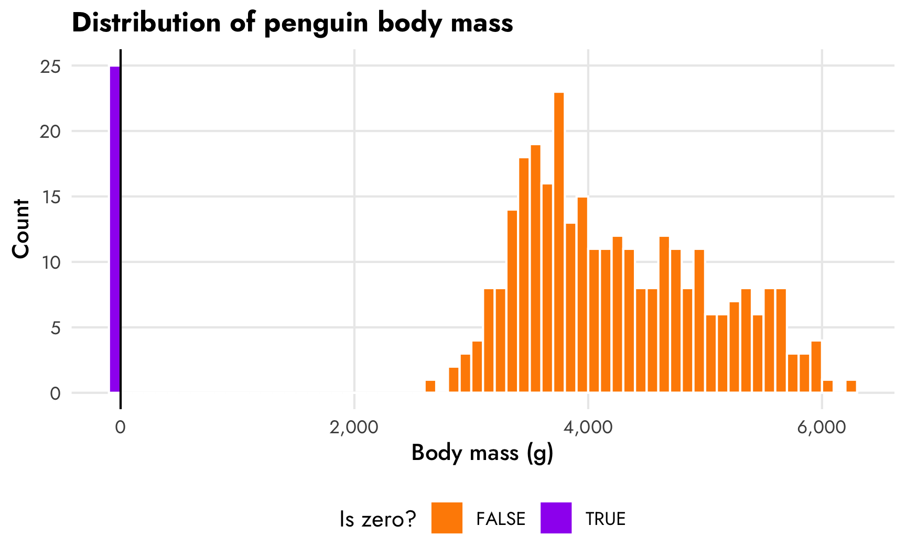
1. Regular OLS model on a non-exponential outcome
Now that we have some artificial zeros, let’s model the relationship between body mass and bill length. Since body mass is relatively normally distributed, we’ll use regular old OLS and not worry about any logging.
The zeros we added are going to cause some problems. In this scatterplot, the ■ blue line is fit using only the non-zero data. If we include the zeros, like the ■ fuchsia line in this plot, the relationship changes a little—the model underpredicts the body mass of shorter-billed penguins.
ggplot(penguins, aes(x = bill_length_mm, y = body_mass_g)) +
geom_point(aes(color = species), size = 1.5) +
geom_smooth(method = "lm", color = "#F012BE") +
geom_smooth(data = filter(penguins, body_mass_g != 0), method = "lm", color = "#0074D9") +
scale_y_continuous(labels = label_comma()) +
scale_color_manual(values = c("darkorange", "purple", "cyan4")) +
labs(x = "Bill length (mm)", y = "Body mass (g)", color = "Species",
title = 'OLS models <span style="color:#F012BE;">with</span> and <span style="color:#0074D9;">without</span> zeros') +
theme_nice() +
theme(legend.position = "bottom",
plot.title = element_markdown())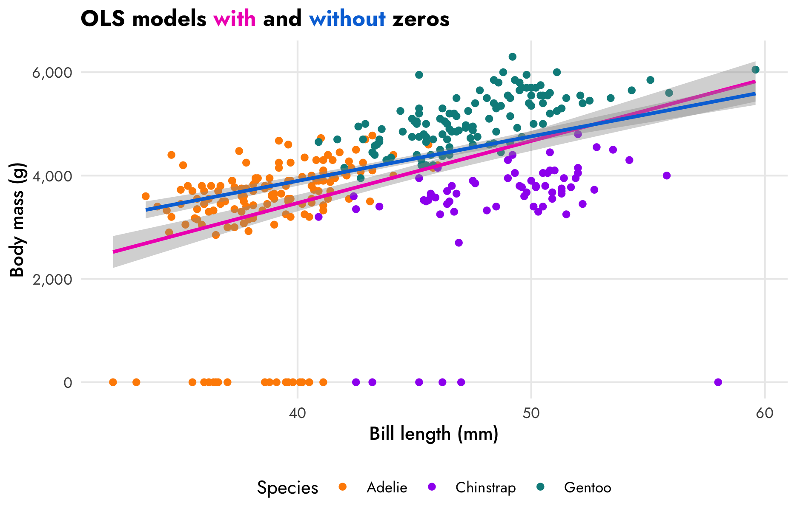
Let’s make a couple models that predict body mass based on bill length and species, both with and without the zeros:
model_mass_basic <- brm(
bf(body_mass_g ~ bill_length_mm + species),
data = penguins,
family = gaussian(),
chains = CHAINS, iter = ITER, warmup = WARMUP, seed = BAYES_SEED,
silent = 2
)
model_mass_basic_no_zero <- brm(
bf(body_mass_g ~ bill_length_mm + species),
data = filter(penguins, !is_zero),
family = gaussian(),
chains = CHAINS, iter = ITER, warmup = WARMUP, seed = BAYES_SEED,
silent = 2
)tidy(model_mass_basic)
## # A tibble: 5 × 8
## effect component group term estimate std.error conf.low conf.high
## <chr> <chr> <chr> <chr> <dbl> <dbl> <dbl> <dbl>
## 1 fixed cond <NA> (Intercept) -1474. 737. -2916. -39.5
## 2 fixed cond <NA> bill_length_mm 122. 18.9 84.9 159.
## 3 fixed cond <NA> speciesChinstrap -1046. 240. -1516. -571.
## 4 fixed cond <NA> speciesGentoo 769. 209. 381. 1182.
## 5 ran_pars cond Residual sd__Observation 1002. 39.3 929. 1082.
tidy(model_mass_basic_no_zero)
## # A tibble: 5 × 8
## effect component group term estimate std.error conf.low conf.high
## <chr> <chr> <chr> <chr> <dbl> <dbl> <dbl> <dbl>
## 1 fixed cond <NA> (Intercept) 219. 287. -316. 794.
## 2 fixed cond <NA> bill_length_mm 90.4 7.31 75.6 104.
## 3 fixed cond <NA> speciesChinstrap -887. 92.6 -1064. -704.
## 4 fixed cond <NA> speciesGentoo 572. 77.4 419. 725.
## 5 ran_pars cond Residual sd__Observation 370. 15.0 342. 401.These models give different estimates for the effect of bill length on body mass. In the model that omits the zeros (■ blue), a 1 mm increase in bill length is associated with a 121.91 gram increase in body mass, on average. If we include the zeros, though (■ fuchsia), the effect drops to 90.42 grams.
If we look at a posterior predictive check for the ■ blue zero-free model we can see that the model doesn’t do a great job of fitting the distribution of the outcome. Compare the distribution of actual observed body mass (in ■ light blue) with simulated body mass from the posterior distribution (in ■ orange). Oh no:
pp_check(model_mass_basic)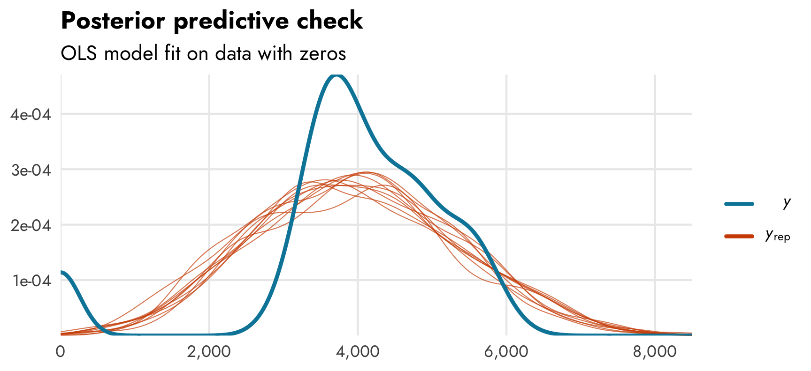
We need to somehow account for these zeros, but how?
2. Hurdle lognormal model on a non-exponential outcome
Unfortunately, there’s no built-in hurdle_gaussian() family we can use with brms. But maybe we can fake it and use hurdle_lognormal(). If we log body mass it shrinks the values down to ≈8.5, and we still have a normal-looking distribution (albeit with a really small range).
penguins |>
mutate(body_mass_g = log1p(body_mass_g)) |>
mutate(body_mass_g = ifelse(is_zero, -0.01, body_mass_g)) |>
ggplot(aes(x = body_mass_g)) +
geom_histogram(aes(fill = is_zero), binwidth = 0.1,
boundary = 0, color = "white") +
geom_vline(xintercept = 0) +
scale_fill_manual(values = c("darkorange", "purple")) +
labs(x = "Body mass (g)", y = "Count", fill = "Is zero?",
title = "Distribution of logged penguin body mass") +
theme_nice() +
theme(legend.position = "bottom")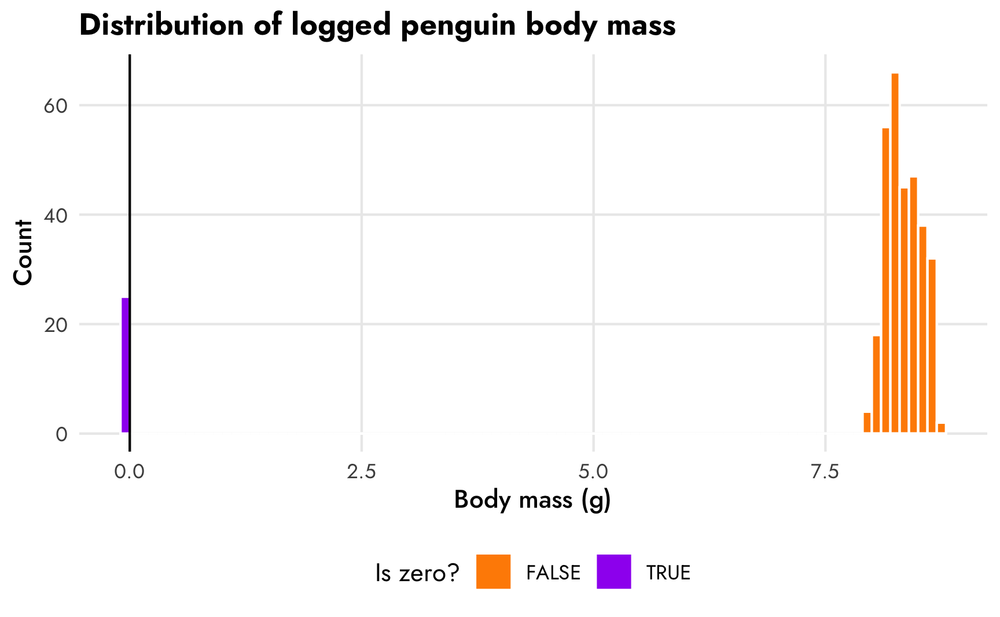
We can probably plausibly use a hurdled lognormal model here like we did with the gapminder example. This makes the coefficients a little harder to interpret—we can’t say that a 1 mm increase in bill length is associated with a X gram change in body mass, but we can say that a 1 mm increase in bill length is associated with a X% change in body mass. And we can back-transform these logged coefficients to the gram scale using emmeans(). Let’s try it.
Since we know the hurdle process (flipper length determined the 0/not 0 choice), we’ll use flipper length in the hu formula.
model_mass_hurdle_log <- brm(
bf(body_mass_g ~ bill_length_mm + species,
hu ~ flipper_length_mm),
data = penguins,
family = hurdle_lognormal(),
chains = CHAINS, iter = ITER, warmup = WARMUP, seed = BAYES_SEED,
silent = 2
)tidy(model_mass_hurdle_log)
## # A tibble: 7 × 8
## effect component group term estimate std.error conf.low conf.high
## <chr> <chr> <chr> <chr> <dbl> <dbl> <dbl> <dbl>
## 1 fixed cond <NA> (Intercept) 7.41 0.0692 7.28 7.55
## 2 fixed cond <NA> hu_(Intercept) 27.4 5.95 16.5 39.7
## 3 fixed cond <NA> bill_length_mm 0.0208 0.00176 0.0173 0.0242
## 4 fixed cond <NA> speciesChinstrap -0.202 0.0224 -0.246 -0.157
## 5 fixed cond <NA> speciesGentoo 0.131 0.0192 0.0936 0.169
## 6 fixed cond <NA> hu_flipper_length_mm -0.155 0.0317 -0.220 -0.0980
## 7 ran_pars cond Residual sd__Observation 0.0888 0.00366 0.0822 0.0961We have results, but they’re on the log scale so we have to think about the coefficients differently. According to the bill_length_mm coefficient, a one-millimeter increase in bill length is associated with a 2.1% increase in body mass.
We can also look at the logit-scale hurdle process, though it’s a little tricky since we can’t just use plogis() on the coefficient. We can use emtrends() to extract the slope, though. Since we’re on a logit scale, the actual slope depends on the value of flipper length depends on flipper length itself. We can feed emtrends() any flipper lengths we want—a range of possible flipper lengths; the average for the data; whatever—and get the corresponding slope or marginal effect. If we include regrid = "response" we’ll see the results on the percentage point-scale
model_mass_hurdle_log |>
emtrends(~ flipper_length_mm, var = "flipper_length_mm",
dpar = "hu", regrid = "response",
# Show the effect for the mean and for a range
at = list(flipper_length_mm = c(mean(penguins$flipper_length_mm),
seq(170, 230, 10))))
## flipper_length_mm flipper_length_mm.trend lower.HPD upper.HPD
## 201 -0.0032 -0.0049 -0.00144
## 170 -0.0292 -0.0364 -0.02038
## 180 -0.0352 -0.0532 -0.01646
## 190 -0.0144 -0.0211 -0.00798
## 200 -0.0036 -0.0056 -0.00184
## 210 -0.0008 -0.0018 -0.00017
## 220 -0.0002 -0.0006 -0.00001
## 230 0.0000 -0.0002 0.00000
##
## Point estimate displayed: median
## HPD interval probability: 0.95The probability of seeing a zero decreases at different rates depending on existing flipper lengths. For short-flippered penguins, a one-mm change from 170 mm to 171 mm is associated with a -2.92 percentage point decrease in the probability of seeing a zero. For long-flippered penguins, a one-mm change from 220 mm to 221 mm is associated with a -0.02 percentage point decrease. For penguins with an average flipper length (200.97 mm), the change is -0.32 percentage points. These slopes are all visible in the conditional_effects() plot of the hurdle component of the model, which I’ll show below.
We can also check how well the model fits the data:
pp_check(model_mass_hurdle_log)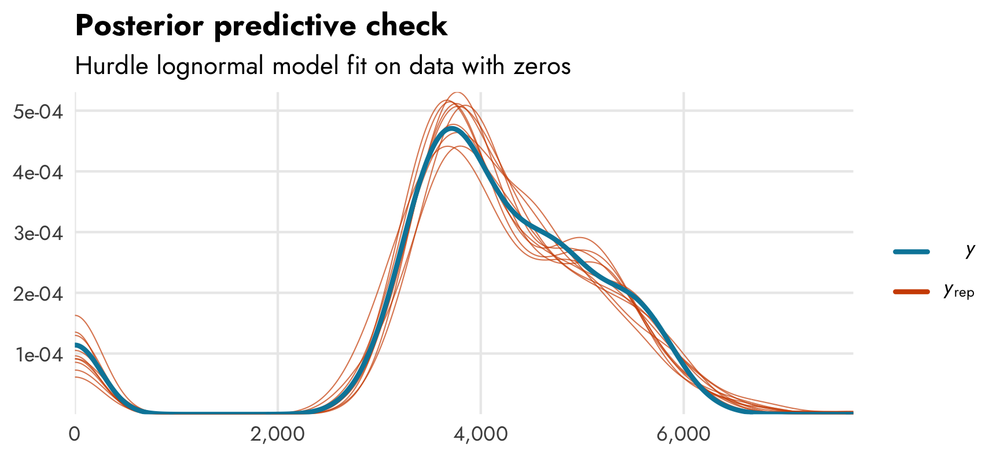
It accounts for the zeros, as expected.
Next we’ll look at the marginal/conditional effects of bill length on body mass and flipper length on the proportion of zeros. We can do it with both conditional_effects() (for quick and easy plots) and with emmeans() (for more control over everything). Unfortunately there’s no easy way to plot only the mu part using conditional_effects()—it defaults to showing expected predictions. We can show only the mu part with emmeans() though.
conditional_effects(model_mass_hurdle_log, effects = "bill_length_mm")
conditional_effects(model_mass_hurdle_log, effects = "flipper_length_mm", dpar = "hu")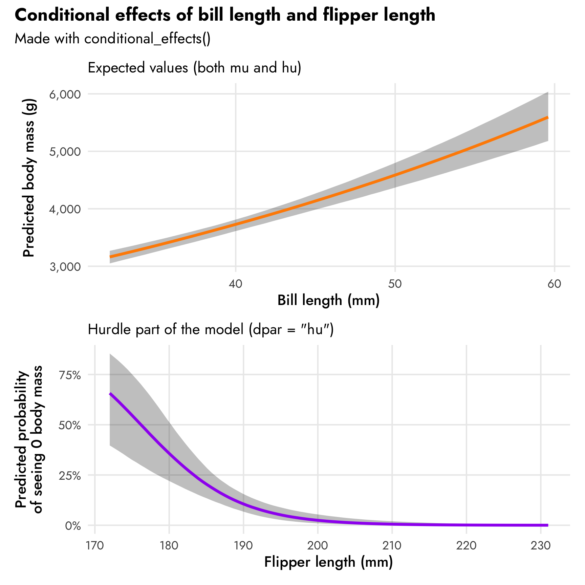
plot_penguins_emmeans0 <- model_mass_hurdle_log |>
emmeans(~ bill_length_mm, var = "bill_length_mm",
at = list(bill_length_mm = seq(30, 60, 1)),
epred = TRUE) |>
gather_emmeans_draws() |>
ggplot(aes(x = bill_length_mm, y = .value)) +
stat_lineribbon(size = 1, color = "cyan4") +
scale_fill_manual(values = colorspace::lighten("cyan4", c(0.95, 0.7, 0.4))) +
scale_y_continuous(labels = label_comma()) +
labs(x = "Bill length (mm)", y = "Predicted body mass (g)",
subtitle = "Expected values from mu and hu parts (epred = TRUE)",
fill = "Credible interval") +
theme_nice() +
theme(legend.position = "bottom")
plot_penguins_emmeans1 <- model_mass_hurdle_log |>
emmeans(~ bill_length_mm, var = "bill_length_mm", dpar = "mu",
regrid = "response", tran = "log", type = "response",
at = list(bill_length_mm = seq(30, 60, 1))) |>
gather_emmeans_draws() |>
mutate(.value = exp(.value)) |>
ggplot(aes(x = bill_length_mm, y = .value)) +
stat_lineribbon(size = 1, color = "darkorange") +
scale_fill_manual(values = colorspace::lighten("darkorange", c(0.95, 0.7, 0.4))) +
scale_y_continuous(labels = label_comma()) +
labs(x = "Bill length (mm)", y = "Predicted body mass (g)",
subtitle = "Regular part of the model (dpar = \"mu\")",
fill = "Credible interval") +
theme_nice() +
theme(legend.position = "bottom")
plot_penguins_emmeans2 <- model_mass_hurdle_log |>
emmeans(~ flipper_length_mm, var = "flipper_length_mm", dpar = "hu",
at = list(flipper_length_mm = seq(170, 240, 1))) |>
gather_emmeans_draws() |>
mutate(.value = plogis(.value)) |>
ggplot(aes(x = flipper_length_mm, y = .value)) +
stat_lineribbon(size = 1, color = "purple") +
scale_fill_manual(values = colorspace::lighten("purple", c(0.95, 0.7, 0.4))) +
scale_y_continuous(labels = label_percent()) +
labs(x = "Flipper length (mm)", y = "Predicted probability\nof seeing 0 body mass",
subtitle = "Hurdle part of the model (dpar = \"hu\")",
fill = "Credible interval") +
theme_nice() +
theme(legend.position = "bottom")
(plot_penguins_emmeans0 / plot_penguins_emmeans1 / plot_penguins_emmeans2) +
plot_annotation(title = "Conditional effects of bill length and flipper length",
subtitle = "Made with emmeans()",
theme = theme(plot.title = element_text(family = "Jost", face = "bold"),
plot.subtitle = element_text(family = "Jost")))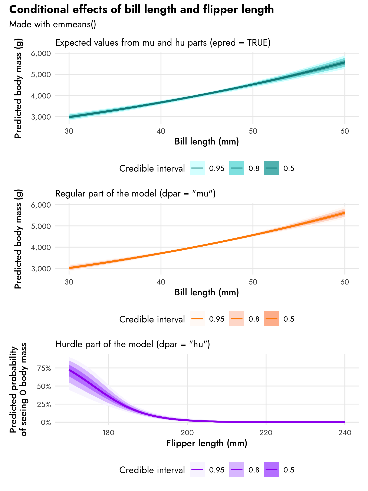
That trend in predicted body mass looks surprisingly linear even though we modeled it with a log-based family! In general it shows that body mass increases by 2.1% for each millimeter increase in bill length. Since we used a log-based family, the actual slope on the original scale will be different across the whole range of bill length. emtrends() lets us see this:
# Slopes for the combined mu and hu parts of the model
model_mass_hurdle_log |>
emtrends(~ bill_length_mm, var = "bill_length_mm",
at = list(bill_length_mm = seq(30, 60, 10)),
epred = TRUE)
## bill_length_mm bill_length_mm.trend lower.HPD upper.HPD
## 30 62.0 54.4 68.8
## 40 76.3 64.5 87.5
## 50 93.9 76.7 111.2
## 60 115.6 91.1 141.5
##
## Results are averaged over the levels of: species
## Point estimate displayed: median
## HPD interval probability: 0.95For penguins with short bills like 30 mm, the slope of bill length is 62; for penguins with long bills like 60 mm, the slope is almost twice that at 115.6. That seems like a huge difference, but body mass ranges in the thousands of grams, so in the plot of conditional effects a 60 mm difference in slope barely registers visually.
3. Hurdle gaussian model with a custom brms family
Modeling body mass with a lognormal model works pretty well despite its fairly-normal-and-not-at-all-exponential distribution. We have to do some additional data acrobatics to convert coefficients from logs to not-logs, which can be annoying. More importantly, though, it feels weird to knowingly use the wrong family to model this outcome. The whole point of doing this hurdle model stuff is to use models that most accurately reflect the underlying data (rather than throwing OLS at everything). It would be great if we could use something like hurdle_gaussian() to avoid all this roundabout log work.
Fortunately brms has the ability to create custom families, and Paul Bürkner has a whole vignette about how to do it. With some R and Stan magic, we can create our own hurdle_gaussian() family. The vignette goes into much more detail about each step, and I worked through most of it a year-ish ago after hours of googling and debugging (and big help from different Stan forum users). Here’s the bare minimum of what’s needed:
Create a custom brms family with
custom_family()to define the name, distributional parameters, links, and other model details.Here we’ll make a family that accepts arguments for
mu,sigma, andhu, which will be modeled using the identity (i.e. original) scale, log scale, and logit scale, respectively.hurdle_gaussian <- # Create a custom family that is logit if y = 0, normal/gaussian if not custom_family("hurdle_gaussian", dpars = c("mu", "sigma", "hu"), links = c("identity", "log", "logit"), lb = c(NA, 0, NA), type = "real")Provide some raw Stan code to handle the actual sampling.
Here’s where we tell Stan to use a binomial family when the outcome is 0 and a normal Gaussian distribution if not.
# Stan code stan_funs <- " real hurdle_gaussian_lpdf(real y, real mu, real sigma, real hu) { if (y == 0) { return bernoulli_lpmf(1 | hu); } else { return bernoulli_lpmf(0 | hu) + normal_lpdf(y | mu, sigma); } } " # Prepare Stan code for use in brm() stanvars <- stanvar(scode = stan_funs, block = "functions")Create some post-processing functions so that things like
predict()work:posterior_predict_hurdle_gaussian <- function(i, prep, ...) { mu <- brms::get_dpar(prep, "mu", i = i) sigma <- brms::get_dpar(prep, "sigma", i = i) theta <- brms::get_dpar(prep, "hu", i = i) hu <- runif(prep$ndraws, 0, 1) ifelse(hu < theta, 0, rnorm(prep$ndraws, mu,sigma)) } posterior_epred_hurdle_gaussian <- function(prep) { with(prep$dpars, mu * (1 - hu)) }
And that’s it!
To use the custom family, we need to specify the name in family and pass the Stan code through the stanvars argument. Let’s use it!
model_mass_hurdle_gaussian <- brm(
bf(body_mass_g ~ bill_length_mm + species,
hu ~ flipper_length_mm),
data = penguins,
family = hurdle_gaussian, # <--- This is new
stanvars = stanvars, # <--- This is new
chains = CHAINS, iter = ITER, warmup = WARMUP, seed = BAYES_SEED,
silent = 2
)tidy(model_mass_hurdle_gaussian)
## # A tibble: 7 × 8
## effect component group term estimate std.error conf.low conf.high
## <chr> <chr> <chr> <chr> <dbl> <dbl> <dbl> <dbl>
## 1 fixed cond <NA> (Intercept) 208. 290. -374. 762.
## 2 fixed cond <NA> hu_(Intercept) 27.4 6.05 16.8 40.1
## 3 fixed cond <NA> bill_length_mm 90.7 7.39 76.4 105.
## 4 fixed cond <NA> speciesChinstrap -889. 95.1 -1075. -703.
## 5 fixed cond <NA> speciesGentoo 570. 78.6 415. 724.
## 6 fixed cond <NA> hu_flipper_length_mm -0.156 0.0323 -0.222 -0.0991
## 7 ran_pars cond Residual sd__Observation 370. 14.9 342. 399.The coefficients for the hurdled part like hu_(Intercept) and hu_flipper_length_mm are still on the logit scale, as expected, but now the coefficients for the non-zero part are on the original regular scale! A one-mm change in bill length is associated with a 90.69 gram increase in body mass; Chinstrap penguins are 888.87 grams lighter than Adélie penguins, while Gentoos are 570.32 grams heavier than Adélies. Nothing is logged and there are no percent changes to worry about. It’s all easy!
If we use pp_check() we can see that the model successfully takes the zeros into account:
pp_check(model_mass_hurdle_gaussian)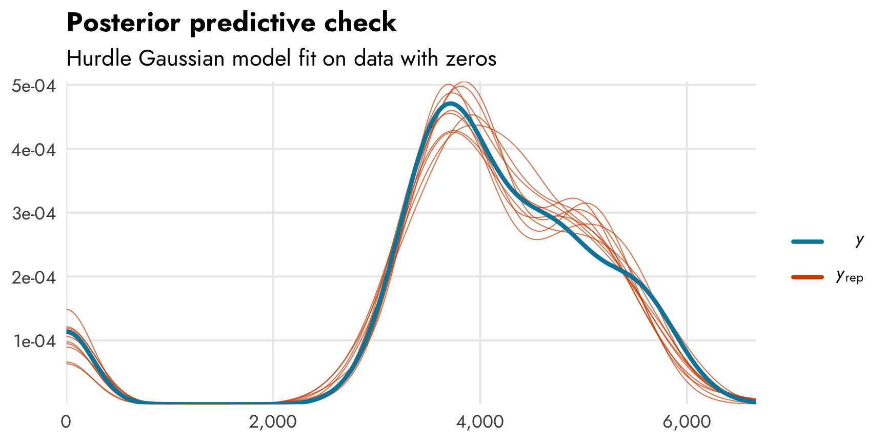
The conditional/marginal effects are more straightforward now too. If we use conditional_effects() we’ll see a perfectly straight line:
# No need for epred = TRUE!
conditional_effects(model_mass_hurdle_gaussian, effects = "bill_length_mm")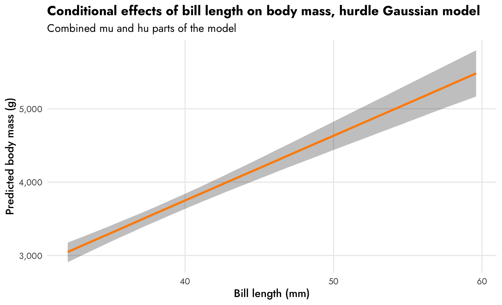
And if we use emtrends() to check the slope of that line across different values of bill length, we’ll see the same slope instead of a range from 61.976 to 115.556 like we saw with the hurdle lognormal family:
model_mass_hurdle_gaussian |>
emtrends(~ bill_length_mm, var = "bill_length_mm",
at = list(bill_length_mm = seq(30, 60, 10)),
epred = TRUE)
## bill_length_mm bill_length_mm.trend lower.HPD upper.HPD
## 30 88.7 74.6 103
## 40 88.7 74.6 103
## 50 88.7 74.6 103
## 60 88.7 74.6 103
##
## Results are averaged over the levels of: species
## Point estimate displayed: median
## HPD interval probability: 0.95Importantly that slope (88.663) is different from what we found when looking at the model results with tidy() (90.69). That’s because emmeans() and emtrends() take the zero process into account by calculating the expected value (epred = TRUE).
We can confirm that there are predicted zeros. For penguins with a shorter bill like 30 mm, the overall distribution of predicted body mass is centered around 3,000ish grams, while those with longer bills (60 mm) are predicted to be clustered around 6,000 grams. Flipper length determines the distribution of zeros (since that’s the effect we built in; remember that we made it so that penguins with a flipper length of less than 190 mm have a 30% chance of being zero). The model picks this up. If we set flipper length to 189 mm (just under the cutoff), the model predicts a big proportion of zeros; if we set it to 210, it predicts a small proportion of zeros.
pred_mass_hurdle_gaussian <- model_mass_hurdle_gaussian |>
predicted_draws(newdata = expand_grid(bill_length_mm = c(30, 60),
species = "Adelie",
flipper_length_mm = c(189, 210))) |>
mutate(is_zero = .prediction == 0,
.prediction = ifelse(is_zero, .prediction - 0.1, .prediction)) |>
mutate(nice_bill = paste0(bill_length_mm, " mm bill"),
nice_flipper = paste0(flipper_length_mm, " mm flippers"))
ggplot(pred_mass_hurdle_gaussian, aes(x = .prediction)) +
geom_histogram(aes(fill = is_zero), binwidth = 100,
boundary = 0, color = "white") +
geom_vline(xintercept = 0) +
scale_x_continuous(labels = label_comma()) +
scale_fill_manual(values = c("darkorange", "purple"),
guide = guide_legend(reverse = TRUE)) +
labs(x = "Predicted body mass (g)", y = NULL, fill = "Is zero?",
title = "Predicted body mass across different bill and flipper lengths",
subitlte = "Results from hurdled Gaussian model") +
facet_nested_wrap(vars(nice_bill, nice_flipper), nrow = 2,
strip = strip_nested(
text_x = list(element_text(family = "Jost",
face = "bold"), NULL),
background_x = list(element_rect(fill = "grey92"), NULL),
by_layer_x = TRUE)) +
theme_nice() +
theme(legend.position = "bottom")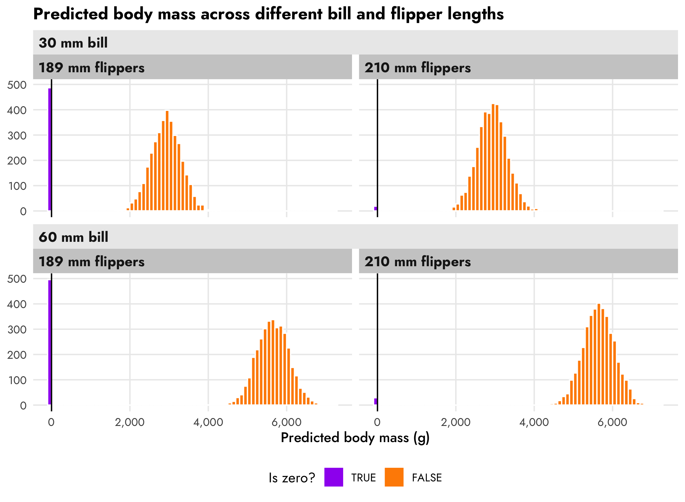
And that’s it! A fully working hurdle Gaussian model in brms! This single model contains an incredible amount of detail about all these different moving parts. Magical!
I lied—this custom family isn’t all the way complete!
It would be really neat to have hurdle_gaussian() as an official native family in brms, and the vignette makes it sound like it’s possible to submit a pull request to formally add custom families like this, BUT what I have here doesn’t quite work all the way.
We’re still missing one post-processing function for calculating the log likelihood for the family. If we try to use a function that relies on the log likelihood like loo(), we’ll get an error:
loo(model_mass_hurdle_gaussian)
## Error in get(out, family$env): object 'log_lik_hurdle_gaussian' not foundIn addition to the posterior_predict_hurdle_gaussian() and posterior_epred_hurdle_gaussian() functions we defined earlier, we also need a log_lik_hurdle_gaussian() function. The only problem is that I have no idea how to make this.
# idk
log_lik_hurdle_gaussian <- function(???) {
# ????????
}Alas.
Despite this, for now the custom hurdle Gaussian model works well for most other things.